DOX_prot_DAP_tests_ruv
Omar Johnson
2024-12-08
Last updated: 2024-12-07
Checks: 7 0
Knit directory: DNA_damage_DOX/
This reproducible R Markdown analysis was created with workflowr (version 1.7.1). The Checks tab describes the reproducibility checks that were applied when the results were created. The Past versions tab lists the development history.
Great! Since the R Markdown file has been committed to the Git repository, you know the exact version of the code that produced these results.
Great job! The global environment was empty. Objects defined in the global environment can affect the analysis in your R Markdown file in unknown ways. For reproduciblity it’s best to always run the code in an empty environment.
The command set.seed(20241207) was run prior to running
the code in the R Markdown file. Setting a seed ensures that any results
that rely on randomness, e.g. subsampling or permutations, are
reproducible.
Great job! Recording the operating system, R version, and package versions is critical for reproducibility.
Nice! There were no cached chunks for this analysis, so you can be confident that you successfully produced the results during this run.
Great job! Using relative paths to the files within your workflowr project makes it easier to run your code on other machines.
Great! You are using Git for version control. Tracking code development and connecting the code version to the results is critical for reproducibility.
The results in this page were generated with repository version 99a3ca4. See the Past versions tab to see a history of the changes made to the R Markdown and HTML files.
Note that you need to be careful to ensure that all relevant files for
the analysis have been committed to Git prior to generating the results
(you can use wflow_publish or
wflow_git_commit). workflowr only checks the R Markdown
file, but you know if there are other scripts or data files that it
depends on. Below is the status of the Git repository when the results
were generated:
Ignored files:
Ignored: .DS_Store
Note that any generated files, e.g. HTML, png, CSS, etc., are not included in this status report because it is ok for generated content to have uncommitted changes.
These are the previous versions of the repository in which changes were
made to the R Markdown
(analysis/DOX_prot_DAP_tests_ruv.Rmd) and HTML
(docs/DOX_prot_DAP_tests_ruv.html) files. If you’ve
configured a remote Git repository (see ?wflow_git_remote),
click on the hyperlinks in the table below to view the files as they
were in that past version.
| File | Version | Author | Date | Message |
|---|---|---|---|---|
| Rmd | 99a3ca4 | Omar-Johnson | 2024-12-07 | Publish analysis/DOX_prot_DAP_tests_ruv.Rmd |
Load Libraries
Added funtions
Read in Data
Wrangle Data Frame
# Save the original
Full_DF <- Protein_DF
Full_DF %>% head() Protein.Group Protein.Ids Protein.Names Genes First.Protein.Description
1 A0A0B4J2A2 A0A0B4J2A2 NA PPIAL4C NA
2 A0A0B4J2D5 A0A0B4J2D5 NA GATD3B NA
3 A0A494C071 A0A494C071 NA PWWP4 NA
4 A0AVT1 A0AVT1 NA UBA6 NA
5 A0FGR8 A0FGR8 NA ESYT2 NA
6 A0JLT2 A0JLT2 NA MED19 NA
S1 S3 S5 S7 S9 S2 S4 S6
1 979954.0 1470000 1460000 1560000 1700000 940535.0 2020000 1460000
2 16000000.0 17000000 15800000 14400000 15500000 15300000.0 13500000 13600000
3 381352.0 429735 287237 412285 380499 433456.0 540008 376304
4 62810.7 135522 159045 123045 123823 49388.1 144860 127488
5 1240000.0 1120000 969130 1040000 1020000 1120000.0 1120000 1080000
6 217977.0 181404 182657 145408 208660 224881.0 202427 160150
S8 S10
1 1390000 1620000
2 13200000 12600000
3 460580 355701
4 84684 102306
5 1120000 1060000
6 126127 209726Full_DF %>% dim()[1] 4261 15# Subset the columns referring to abundance
Protein_DF_Abundance <- Full_DF[,colnames(Full_DF) %in% c("Protein.Ids", "S1" , "S3" , "S5" , "S7", "S9", "S2", "S4", "S6" , "S8", "S10")]
Protein_DF_Abundance %>% head() Protein.Ids S1 S3 S5 S7 S9 S2
1 A0A0B4J2A2 979954.0 1470000 1460000 1560000 1700000 940535.0
2 A0A0B4J2D5 16000000.0 17000000 15800000 14400000 15500000 15300000.0
3 A0A494C071 381352.0 429735 287237 412285 380499 433456.0
4 A0AVT1 62810.7 135522 159045 123045 123823 49388.1
5 A0FGR8 1240000.0 1120000 969130 1040000 1020000 1120000.0
6 A0JLT2 217977.0 181404 182657 145408 208660 224881.0
S4 S6 S8 S10
1 2020000 1460000 1390000 1620000
2 13500000 13600000 13200000 12600000
3 540008 376304 460580 355701
4 144860 127488 84684 102306
5 1120000 1080000 1120000 1060000
6 202427 160150 126127 209726Protein_DF_Abundance %>% dim()[1] 4261 11colnames(Protein_DF_Abundance) <- c("Accession", "S1" , "S3" , "S5" , "S7", "S9", "S2", "S4", "S6" , "S8", "S10")
Protein_DF_Abundance %>% head() Accession S1 S3 S5 S7 S9 S2 S4
1 A0A0B4J2A2 979954.0 1470000 1460000 1560000 1700000 940535.0 2020000
2 A0A0B4J2D5 16000000.0 17000000 15800000 14400000 15500000 15300000.0 13500000
3 A0A494C071 381352.0 429735 287237 412285 380499 433456.0 540008
4 A0AVT1 62810.7 135522 159045 123045 123823 49388.1 144860
5 A0FGR8 1240000.0 1120000 969130 1040000 1020000 1120000.0 1120000
6 A0JLT2 217977.0 181404 182657 145408 208660 224881.0 202427
S6 S8 S10
1 1460000 1390000 1620000
2 13600000 13200000 12600000
3 376304 460580 355701
4 127488 84684 102306
5 1080000 1120000 1060000
6 160150 126127 209726Protein_DF_Abundance %>% dim()[1] 4261 11# Check for duplicated rows
# Identify duplicated values
Protein_DF_Abundance$duplicated_name <- duplicated(Protein_DF_Abundance$Accession)
# This will return a logical vector where TRUE indicates the position of duplicates in the column.
# To see only rows with duplicated values, you can subset the dataframe like this:
duplicated_rows <- Protein_DF_Abundance[Protein_DF_Abundance$duplicated_name == TRUE, ]
print(duplicated_rows) # We have 0 rows with duplicate protein names [1] Accession S1 S3 S5
[5] S7 S9 S2 S4
[9] S6 S8 S10 duplicated_name
<0 rows> (or 0-length row.names)# Make rownames of the data frame accession IDs
rownames(Protein_DF_Abundance) <- Protein_DF_Abundance$Accession
# Change colnames
colnames(Protein_DF_Abundance) [1] "Accession" "S1" "S3" "S5"
[5] "S7" "S9" "S2" "S4"
[9] "S6" "S8" "S10" "duplicated_name"Protein_DF_Abundance <- Protein_DF_Abundance[, -c(1, 12)]
Protein_DF_Abundance %>% head() S1 S3 S5 S7 S9 S2 S4
A0A0B4J2A2 979954.0 1470000 1460000 1560000 1700000 940535.0 2020000
A0A0B4J2D5 16000000.0 17000000 15800000 14400000 15500000 15300000.0 13500000
A0A494C071 381352.0 429735 287237 412285 380499 433456.0 540008
A0AVT1 62810.7 135522 159045 123045 123823 49388.1 144860
A0FGR8 1240000.0 1120000 969130 1040000 1020000 1120000.0 1120000
A0JLT2 217977.0 181404 182657 145408 208660 224881.0 202427
S6 S8 S10
A0A0B4J2A2 1460000 1390000 1620000
A0A0B4J2D5 13600000 13200000 12600000
A0A494C071 376304 460580 355701
A0AVT1 127488 84684 102306
A0FGR8 1080000 1120000 1060000
A0JLT2 160150 126127 209726Protein_DF_Abundance %>% dim()[1] 4261 10# Assuming column names of Protein_DF match with the rows in Meta
Meta Samples Ind Rep Cond Cond_Ind
1 S1 B_77 Bio Dox B_77_Dox
2 S3 C_87 Bio Dox C_87_Dox
3 S5 A_48 Tech Dox A_48_Dox
4 S7 A_48 Tech Dox A_48_Dox
5 S9 A_48 Tech Dox A_48_Dox
6 S2 B_77 Bio Control B_77_Control
7 S4 C_87 Bio Control C_87_Control
8 S6 A_48 Tech Control A_48_Control
9 S8 A_48 Tech Control A_48_Control
10 S10 A_48 Tech Control A_48_Controlrownames(Meta) <- Meta$Samples
Meta Samples Ind Rep Cond Cond_Ind
S1 S1 B_77 Bio Dox B_77_Dox
S3 S3 C_87 Bio Dox C_87_Dox
S5 S5 A_48 Tech Dox A_48_Dox
S7 S7 A_48 Tech Dox A_48_Dox
S9 S9 A_48 Tech Dox A_48_Dox
S2 S2 B_77 Bio Control B_77_Control
S4 S4 C_87 Bio Control C_87_Control
S6 S6 A_48 Tech Control A_48_Control
S8 S8 A_48 Tech Control A_48_Control
S10 S10 A_48 Tech Control A_48_Controlcolnames(Protein_DF_Abundance) <- Meta$Samples
Protein_DF_Abundance %>% head() S1 S3 S5 S7 S9 S2 S4
A0A0B4J2A2 979954.0 1470000 1460000 1560000 1700000 940535.0 2020000
A0A0B4J2D5 16000000.0 17000000 15800000 14400000 15500000 15300000.0 13500000
A0A494C071 381352.0 429735 287237 412285 380499 433456.0 540008
A0AVT1 62810.7 135522 159045 123045 123823 49388.1 144860
A0FGR8 1240000.0 1120000 969130 1040000 1020000 1120000.0 1120000
A0JLT2 217977.0 181404 182657 145408 208660 224881.0 202427
S6 S8 S10
A0A0B4J2A2 1460000 1390000 1620000
A0A0B4J2D5 13600000 13200000 12600000
A0A494C071 376304 460580 355701
A0AVT1 127488 84684 102306
A0FGR8 1080000 1120000 1060000
A0JLT2 160150 126127 209726Meta Samples Ind Rep Cond Cond_Ind
S1 S1 B_77 Bio Dox B_77_Dox
S3 S3 C_87 Bio Dox C_87_Dox
S5 S5 A_48 Tech Dox A_48_Dox
S7 S7 A_48 Tech Dox A_48_Dox
S9 S9 A_48 Tech Dox A_48_Dox
S2 S2 B_77 Bio Control B_77_Control
S4 S4 C_87 Bio Control C_87_Control
S6 S6 A_48 Tech Control A_48_Control
S8 S8 A_48 Tech Control A_48_Control
S10 S10 A_48 Tech Control A_48_ControlRemove NA
#1. Find rows with any NA values
rows_with_na <- apply(Protein_DF_Abundance, 1, function(x) any(is.na(x))) %>% which()
rows_with_na <- as.numeric(rows_with_na)
# 2. Remove rows with NA values
Protein_DF_Abundance <- Protein_DF_Abundance[-rows_with_na, ]
# 3. Sanity check
Protein_DF_Abundance %>% dim()[1] 3934 10Log2 transform
log2_norm_counts <- log2(Protein_DF_Abundance)
log2_norm_counts %>% rowMeans() %>% hist(breaks = 100)
Quantile Normalization
normalizedData <- limma::normalizeBetweenArrays(log2_norm_counts[, c(1,2,4,6,7,9)], method = "quantile")
normalizedData %>% rowMeans() %>% hist(breaks = 100)
Linear model - RUVs
# counts need to be integer values and in a numeric matrix
counts <- as.matrix(normalizedData)
counts %>% dim()[1] 3934 6# Create a DataFrame for the phenoData
phenoData <- DataFrame(Meta)
phenoData_sub <- phenoData[c(1,2,4,6,7,9), ]
# Create Design Matrix
# phenoData$Cond <- factor(phenoData$Cond , levels = c("Control", "Dox"))
design <- model.matrix(~ 0 + Cond , phenoData_sub)
design CondControl CondDox
S1 0 1
S3 0 1
S7 0 1
S2 1 0
S4 1 0
S8 1 0
attr(,"assign")
[1] 1 1
attr(,"contrasts")
attr(,"contrasts")$Cond
[1] "contr.treatment"# rename columns
colnames(design) <- c('Control', "Dox")
# Fit model
dupcor <- duplicateCorrelation(counts , design, block = phenoData_sub$Ind)
fit <- lmFit(object = counts, design = design, block = phenoData_sub$Ind, correlation = dupcor$consensus)
fit2 <- eBayes(fit)
# Make contrasts
cm <- makeContrasts(
DoxvNorm = Dox - Control,
levels = design)
# Model with contrasts
fit2 <- contrasts.fit(fit, cm)
fit2 <- eBayes(fit2 )
# Summarize
results_summary <- decideTests(fit2, adjust.method = "none", p.value = 0.05)
summary(results_summary) DoxvNorm
Down 570
NotSig 2835
Up 529# Toptable summary organized to contain results for all tested proteins
toptable_summary <- topTable(fit2, coef = "DoxvNorm",number = (nrow(normalizedData)), p.value = 1, adjust.method = "none")
toptable_summary$Protein <- rownames(toptable_summary)
toptable_summary$P.Value %>% hist(breaks = 100)
# PCA of log2-quantile normalized-RUVs values:
prcomp_res <- prcomp(t(normalizedData %>% as.matrix()), center = TRUE)
ggplot2::autoplot(prcomp_res, data = as.data.frame(phenoData_sub), colour = "Cond", shape = "Ind", size =4)+
theme_bw()
# Volcano plots
# 1. Create a column to threshold P-values
toptable_summary <- toptable_summary %>% mutate(threshold_P = P.Value < 0.05)
# 2. Plot
ggplot(toptable_summary)+
geom_point(mapping = aes(x = logFC, y = -log10(P.Value), color = threshold_P))+
xlab("log2FC")+
ylab("-log10 nominal p-value")+
ylim(0, 7.5)+
xlim(-5, 5)+
theme(legend.position = "none",
plot.title = element_text(size = rel(1.5), hjust = 0.5),
axis.title = element_text(size = rel(1.25)))+
theme_bw()
# Other fits
fit3 <- eBayes(fit2, robust = TRUE, trend = TRUE)Warning: One very small variance detected, has been offset away from zero# Summarize
results_summary <- decideTests(fit3, adjust.method = "none", p.value = 0.05)
summary(results_summary) DoxvNorm
Down 572
NotSig 2808
Up 554# Toptable summary organized to contain results for all tested proteins
toptable_summary <- topTable(fit3, coef = "DoxvNorm",number = (nrow(normalizedData)), p.value = 1, adjust.method = "none")
toptable_summary$Protein <- rownames(toptable_summary)
toptable_summary$P.Value %>% hist(breaks = 100)
# PCA of log2-quantile normalized-RUVs values:
prcomp_res <- prcomp(t(normalizedData %>% as.matrix()), center = TRUE)
ggplot2::autoplot(prcomp_res, data = as.data.frame(phenoData_sub), colour = "Cond", shape = "Ind", size =4)+
theme_bw()
# Volcano plots
# 1. Create a column to threshold P-values
toptable_summary <- toptable_summary %>% mutate(threshold_P = P.Value < 0.05)
# 2. Plot
ggplot(toptable_summary)+
geom_point(mapping = aes(x = logFC, y = -log10(P.Value), color = threshold_P))+
xlab("log2FC")+
ylab("-log10 nominal p-value")+
ylim(0, 7.5)+
xlim(-5, 5)+
theme(legend.position = "none",
plot.title = element_text(size = rel(1.5), hjust = 0.5),
axis.title = element_text(size = rel(1.25)))+
theme_bw()
Wrangle Data Frame for imputed data
# Save the original
Full_DF <- Protein_DF
Full_DF %>% head() Protein.Group Protein.Ids Protein.Names Genes First.Protein.Description
1 A0A0B4J2A2 A0A0B4J2A2 NA PPIAL4C NA
2 A0A0B4J2D5 A0A0B4J2D5 NA GATD3B NA
3 A0A494C071 A0A494C071 NA PWWP4 NA
4 A0AVT1 A0AVT1 NA UBA6 NA
5 A0FGR8 A0FGR8 NA ESYT2 NA
6 A0JLT2 A0JLT2 NA MED19 NA
S1 S3 S5 S7 S9 S2 S4 S6
1 979954.0 1470000 1460000 1560000 1700000 940535.0 2020000 1460000
2 16000000.0 17000000 15800000 14400000 15500000 15300000.0 13500000 13600000
3 381352.0 429735 287237 412285 380499 433456.0 540008 376304
4 62810.7 135522 159045 123045 123823 49388.1 144860 127488
5 1240000.0 1120000 969130 1040000 1020000 1120000.0 1120000 1080000
6 217977.0 181404 182657 145408 208660 224881.0 202427 160150
S8 S10
1 1390000 1620000
2 13200000 12600000
3 460580 355701
4 84684 102306
5 1120000 1060000
6 126127 209726Full_DF %>% dim()[1] 4261 15# # Subset the columns referring to abundance
Protein_DF_Abundance <- Full_DF[,colnames(Full_DF) %in% c("Protein.Ids", "S1" , "S3" , "S5" , "S7", "S9", "S2", "S4", "S6" , "S8", "S10")]
Protein_DF_Abundance %>% head() Protein.Ids S1 S3 S5 S7 S9 S2
1 A0A0B4J2A2 979954.0 1470000 1460000 1560000 1700000 940535.0
2 A0A0B4J2D5 16000000.0 17000000 15800000 14400000 15500000 15300000.0
3 A0A494C071 381352.0 429735 287237 412285 380499 433456.0
4 A0AVT1 62810.7 135522 159045 123045 123823 49388.1
5 A0FGR8 1240000.0 1120000 969130 1040000 1020000 1120000.0
6 A0JLT2 217977.0 181404 182657 145408 208660 224881.0
S4 S6 S8 S10
1 2020000 1460000 1390000 1620000
2 13500000 13600000 13200000 12600000
3 540008 376304 460580 355701
4 144860 127488 84684 102306
5 1120000 1080000 1120000 1060000
6 202427 160150 126127 209726Protein_DF_Abundance %>% dim()[1] 4261 11colnames(Protein_DF_Abundance) <- c("Accession", "S1" , "S3" , "S5" , "S7", "S9", "S2", "S4", "S6" , "S8", "S10")
Protein_DF_Abundance %>% head() Accession S1 S3 S5 S7 S9 S2 S4
1 A0A0B4J2A2 979954.0 1470000 1460000 1560000 1700000 940535.0 2020000
2 A0A0B4J2D5 16000000.0 17000000 15800000 14400000 15500000 15300000.0 13500000
3 A0A494C071 381352.0 429735 287237 412285 380499 433456.0 540008
4 A0AVT1 62810.7 135522 159045 123045 123823 49388.1 144860
5 A0FGR8 1240000.0 1120000 969130 1040000 1020000 1120000.0 1120000
6 A0JLT2 217977.0 181404 182657 145408 208660 224881.0 202427
S6 S8 S10
1 1460000 1390000 1620000
2 13600000 13200000 12600000
3 376304 460580 355701
4 127488 84684 102306
5 1080000 1120000 1060000
6 160150 126127 209726Protein_DF_Abundance %>% dim()[1] 4261 11# # Check for duplicated rows
# # Identify duplicated values
Protein_DF_Abundance$duplicated_name <- duplicated(Protein_DF_Abundance$Accession)
# # This will return a logical vector where TRUE indicates the position of duplicates in the column.
# # To see only rows with duplicated values, you can subset the dataframe like this:
duplicated_rows <- Protein_DF_Abundance[Protein_DF_Abundance$duplicated_name == TRUE, ]
print(duplicated_rows) # We have 0 rows with duplicate protein names [1] Accession S1 S3 S5
[5] S7 S9 S2 S4
[9] S6 S8 S10 duplicated_name
<0 rows> (or 0-length row.names)# # Make rownames of the data frame accession IDs
rownames(Protein_DF_Abundance) <- Protein_DF_Abundance$Accession
# # Change colnames
colnames(Protein_DF_Abundance) [1] "Accession" "S1" "S3" "S5"
[5] "S7" "S9" "S2" "S4"
[9] "S6" "S8" "S10" "duplicated_name"Protein_DF_Abundance <- Protein_DF_Abundance[, -c(1, 12)]
Protein_DF_Abundance %>% head() S1 S3 S5 S7 S9 S2 S4
A0A0B4J2A2 979954.0 1470000 1460000 1560000 1700000 940535.0 2020000
A0A0B4J2D5 16000000.0 17000000 15800000 14400000 15500000 15300000.0 13500000
A0A494C071 381352.0 429735 287237 412285 380499 433456.0 540008
A0AVT1 62810.7 135522 159045 123045 123823 49388.1 144860
A0FGR8 1240000.0 1120000 969130 1040000 1020000 1120000.0 1120000
A0JLT2 217977.0 181404 182657 145408 208660 224881.0 202427
S6 S8 S10
A0A0B4J2A2 1460000 1390000 1620000
A0A0B4J2D5 13600000 13200000 12600000
A0A494C071 376304 460580 355701
A0AVT1 127488 84684 102306
A0FGR8 1080000 1120000 1060000
A0JLT2 160150 126127 209726Protein_DF_Abundance %>% dim()[1] 4261 10#
# # Assuming column names of Protein_DF match with the rows in Meta
Meta Samples Ind Rep Cond Cond_Ind
S1 S1 B_77 Bio Dox B_77_Dox
S3 S3 C_87 Bio Dox C_87_Dox
S5 S5 A_48 Tech Dox A_48_Dox
S7 S7 A_48 Tech Dox A_48_Dox
S9 S9 A_48 Tech Dox A_48_Dox
S2 S2 B_77 Bio Control B_77_Control
S4 S4 C_87 Bio Control C_87_Control
S6 S6 A_48 Tech Control A_48_Control
S8 S8 A_48 Tech Control A_48_Control
S10 S10 A_48 Tech Control A_48_Controlrownames(Meta) <- Meta$Samples
Meta Samples Ind Rep Cond Cond_Ind
S1 S1 B_77 Bio Dox B_77_Dox
S3 S3 C_87 Bio Dox C_87_Dox
S5 S5 A_48 Tech Dox A_48_Dox
S7 S7 A_48 Tech Dox A_48_Dox
S9 S9 A_48 Tech Dox A_48_Dox
S2 S2 B_77 Bio Control B_77_Control
S4 S4 C_87 Bio Control C_87_Control
S6 S6 A_48 Tech Control A_48_Control
S8 S8 A_48 Tech Control A_48_Control
S10 S10 A_48 Tech Control A_48_Controlcolnames(Protein_DF_Abundance) <- Meta$Samples
Protein_DF_Abundance %>% head() S1 S3 S5 S7 S9 S2 S4
A0A0B4J2A2 979954.0 1470000 1460000 1560000 1700000 940535.0 2020000
A0A0B4J2D5 16000000.0 17000000 15800000 14400000 15500000 15300000.0 13500000
A0A494C071 381352.0 429735 287237 412285 380499 433456.0 540008
A0AVT1 62810.7 135522 159045 123045 123823 49388.1 144860
A0FGR8 1240000.0 1120000 969130 1040000 1020000 1120000.0 1120000
A0JLT2 217977.0 181404 182657 145408 208660 224881.0 202427
S6 S8 S10
A0A0B4J2A2 1460000 1390000 1620000
A0A0B4J2D5 13600000 13200000 12600000
A0A494C071 376304 460580 355701
A0AVT1 127488 84684 102306
A0FGR8 1080000 1120000 1060000
A0JLT2 160150 126127 209726Meta Samples Ind Rep Cond Cond_Ind
S1 S1 B_77 Bio Dox B_77_Dox
S3 S3 C_87 Bio Dox C_87_Dox
S5 S5 A_48 Tech Dox A_48_Dox
S7 S7 A_48 Tech Dox A_48_Dox
S9 S9 A_48 Tech Dox A_48_Dox
S2 S2 B_77 Bio Control B_77_Control
S4 S4 C_87 Bio Control C_87_Control
S6 S6 A_48 Tech Control A_48_Control
S8 S8 A_48 Tech Control A_48_Control
S10 S10 A_48 Tech Control A_48_ControlPlot S2A Viewing how NA threshold vs remaining proteins
# View how NA thresholds affect the amount of proteins remaining to model
# All proteins
Protein_DF_Abundance %>% nrow()[1] 4261# Removing proteins with 1 or more NA
remove_rows_with_nas_var(data_frame = Protein_DF_Abundance , NA_remove = 1 ) %>% nrow()[1] 3934# Removing proteins with 2 or more NA
remove_rows_with_nas_var(data_frame = Protein_DF_Abundance , NA_remove = 2 ) %>% nrow()[1] 4051# Removing proteins with 3 or more NA
remove_rows_with_nas_var(data_frame = Protein_DF_Abundance , NA_remove = 3 ) %>% nrow()[1] 4118# Removing proteins with 4 or more NA
remove_rows_with_nas_var(data_frame = Protein_DF_Abundance , NA_remove = 4 ) %>% nrow()[1] 4153# Removing proteins with 5 or more NA
remove_rows_with_nas_var(data_frame = Protein_DF_Abundance , NA_remove = 5 ) %>% nrow()[1] 4182# Removing proteins with 6 or more NA
remove_rows_with_nas_var(data_frame = Protein_DF_Abundance , NA_remove = 6 ) %>% nrow()[1] 4212# Removing proteins with 7 or more NA
remove_rows_with_nas_var(data_frame = Protein_DF_Abundance , NA_remove = 7 ) %>% nrow()[1] 4229# Removing proteins with 8 or more NA
remove_rows_with_nas_var(data_frame = Protein_DF_Abundance , NA_remove = 8 ) %>% nrow()[1] 4241# View in graph
plot_nrow_vs_naremove(Protein_DF_Abundance)
NA removal and imputing with knn
# View original abundances
Protein_DF_Abundance %>% head() S1 S3 S5 S7 S9 S2 S4
A0A0B4J2A2 979954.0 1470000 1460000 1560000 1700000 940535.0 2020000
A0A0B4J2D5 16000000.0 17000000 15800000 14400000 15500000 15300000.0 13500000
A0A494C071 381352.0 429735 287237 412285 380499 433456.0 540008
A0AVT1 62810.7 135522 159045 123045 123823 49388.1 144860
A0FGR8 1240000.0 1120000 969130 1040000 1020000 1120000.0 1120000
A0JLT2 217977.0 181404 182657 145408 208660 224881.0 202427
S6 S8 S10
A0A0B4J2A2 1460000 1390000 1620000
A0A0B4J2D5 13600000 13200000 12600000
A0A494C071 376304 460580 355701
A0AVT1 127488 84684 102306
A0FGR8 1080000 1120000 1060000
A0JLT2 160150 126127 209726Protein_DF_Abundance[,1] %>% hist(breaks = 100)
Protein_DF_Abundance[,2] %>% hist(breaks = 100)
Protein_DF_Abundance[,3] %>% hist(breaks = 100)
Protein_DF_Abundance[,4] %>% hist(breaks = 100)
Protein_DF_Abundance[,5] %>% hist(breaks = 100)
Protein_DF_Abundance[,6] %>% hist(breaks = 100)
Protein_DF_Abundance[,7] %>% hist(breaks = 100)
Protein_DF_Abundance[,8] %>% hist(breaks = 100)
Protein_DF_Abundance[,9] %>% hist(breaks = 100)
Protein_DF_Abundance[,10] %>% hist(breaks = 100)
# View abundances after removing proteins with 5 or more (50%) NA
Protein_DF_Abundance_imp <- remove_rows_with_nas(Protein_DF_Abundance)
Protein_DF_Abundance_imp %>% dim()[1] 4182 10Protein_DF_Abundance_imp[,1] %>% hist(breaks = 100)
Protein_DF_Abundance_imp[,2] %>% hist(breaks = 100)
Protein_DF_Abundance_imp[,3] %>% hist(breaks = 100)
Protein_DF_Abundance_imp[,4] %>% hist(breaks = 100)
Protein_DF_Abundance_imp[,5] %>% hist(breaks = 100)
Protein_DF_Abundance_imp[,6] %>% hist(breaks = 100)
Protein_DF_Abundance_imp[,7] %>% hist(breaks = 100)
Protein_DF_Abundance_imp[,8] %>% hist(breaks = 100)
Protein_DF_Abundance_imp[,9] %>% hist(breaks = 100)
Protein_DF_Abundance_imp[,10] %>% hist(breaks = 100)
Protein_DF_Abundance_imp_2 <- impute.knn(as.matrix(Protein_DF_Abundance_imp), k = 10, rowmax = 0.4)$dataCluster size 4182 broken into 60 4122
Done cluster 60
Cluster size 4122 broken into 316 3806
Done cluster 316
Cluster size 3806 broken into 2988 818
Cluster size 2988 broken into 2086 902
Cluster size 2086 broken into 843 1243
Done cluster 843
Done cluster 1243
Done cluster 2086
Done cluster 902
Done cluster 2988
Done cluster 818
Done cluster 3806
Done cluster 4122 Protein_DF_Abundance_imp_2 %>% dim()[1] 4182 10Protein_DF_Abundance_imp_2[,1] %>% hist(breaks = 100)
Protein_DF_Abundance_imp_2[,2] %>% hist(breaks = 100)
Protein_DF_Abundance_imp_2[,3] %>% hist(breaks = 100)
Protein_DF_Abundance_imp_2[,4] %>% hist(breaks = 100)
Protein_DF_Abundance_imp_2[,5] %>% hist(breaks = 100)
Protein_DF_Abundance_imp_2[,6] %>% hist(breaks = 100)
Protein_DF_Abundance_imp_2[,7] %>% hist(breaks = 100)
Protein_DF_Abundance_imp_2[,8] %>% hist(breaks = 100)
Protein_DF_Abundance_imp_2[,9] %>% hist(breaks = 100)
Protein_DF_Abundance_imp_2[,10] %>% hist(breaks = 100)
Log2 transform for imputed data
log2_norm_counts <- log2(Protein_DF_Abundance_imp_2)
log2_norm_counts %>% rowMeans() %>% hist(breaks = 100)
log2_norm_counts[,1] %>% hist(breaks = 100) 
log2_norm_counts[,2] %>% hist(breaks = 100)
log2_norm_counts[,3] %>% hist(breaks = 100)
log2_norm_counts[,4] %>% hist(breaks = 100)
log2_norm_counts[,5] %>% hist(breaks = 100)
log2_norm_counts[,6] %>% hist(breaks = 100)
log2_norm_counts[,7] %>% hist(breaks = 100)
log2_norm_counts[,8] %>% hist(breaks = 100)
log2_norm_counts[,9] %>% hist(breaks = 100)
log2_norm_counts[,10] %>% hist(breaks = 100)
Quantile Normalization for imputed data
normalizedData <- limma::normalizeBetweenArrays(log2_norm_counts[, c(1,2,4,6,7,9)], method = "quantile")
normalizedData %>% rowMeans() %>% hist(breaks = 100)
normalizedData[,1] %>% hist(breaks = 100) 
normalizedData[,2] %>% hist(breaks = 100)
normalizedData[,3] %>% hist(breaks = 100)
normalizedData[,4] %>% hist(breaks = 100)
normalizedData[,5] %>% hist(breaks = 100)
normalizedData[,6] %>% hist(breaks = 100)
Fig-S2 B- View distribution of imputed NA values for all samples
na_positions <- is.na(Protein_DF_Abundance_imp)
rows_with_dv <- na_positions[apply(na_positions, 1, any), ]
rows_with_4_or_less_true <- rows_with_dv[rowSums(rows_with_dv) <= 4, ]
rows_with_4_or_less_true S1 S3 S5 S7 S9 S2 S4 S6 S8 S10
A4D2B0 TRUE FALSE FALSE FALSE FALSE FALSE FALSE FALSE FALSE FALSE
A5PLN9 FALSE FALSE FALSE TRUE TRUE TRUE TRUE FALSE FALSE FALSE
A6NHL2 FALSE TRUE FALSE FALSE FALSE FALSE FALSE TRUE FALSE TRUE
A6NMY6 FALSE FALSE FALSE FALSE TRUE FALSE FALSE FALSE FALSE FALSE
A8MTT3 FALSE FALSE FALSE TRUE FALSE FALSE FALSE FALSE FALSE FALSE
B2RUZ4 FALSE FALSE FALSE FALSE FALSE FALSE TRUE TRUE TRUE FALSE
B9A064 FALSE FALSE FALSE FALSE FALSE FALSE FALSE FALSE TRUE FALSE
O00115 FALSE FALSE FALSE FALSE FALSE FALSE TRUE FALSE FALSE FALSE
O00194 FALSE TRUE FALSE FALSE FALSE FALSE TRUE FALSE FALSE FALSE
O00292 FALSE TRUE FALSE FALSE FALSE FALSE TRUE FALSE FALSE FALSE
O00470 FALSE FALSE TRUE FALSE TRUE TRUE FALSE FALSE FALSE FALSE
O14561 FALSE FALSE FALSE TRUE TRUE FALSE FALSE FALSE FALSE FALSE
O14576 TRUE FALSE TRUE FALSE FALSE FALSE FALSE FALSE FALSE FALSE
O14798 FALSE FALSE FALSE FALSE FALSE FALSE TRUE FALSE FALSE FALSE
O14817 FALSE FALSE FALSE FALSE FALSE FALSE FALSE TRUE TRUE FALSE
O14841 FALSE FALSE FALSE FALSE FALSE TRUE FALSE FALSE FALSE FALSE
O14976 FALSE TRUE FALSE FALSE TRUE FALSE FALSE FALSE FALSE FALSE
O15085 FALSE TRUE FALSE FALSE TRUE TRUE TRUE FALSE FALSE FALSE
O15440 FALSE FALSE FALSE FALSE FALSE TRUE TRUE TRUE FALSE FALSE
O43150 FALSE FALSE FALSE FALSE FALSE FALSE FALSE TRUE FALSE TRUE
O43157 FALSE TRUE FALSE FALSE FALSE FALSE FALSE FALSE FALSE FALSE
O43318 TRUE FALSE FALSE FALSE FALSE FALSE FALSE FALSE FALSE FALSE
O43854 FALSE FALSE FALSE FALSE FALSE FALSE TRUE FALSE FALSE FALSE
O60343 TRUE FALSE FALSE FALSE FALSE FALSE FALSE FALSE FALSE FALSE
O60637 FALSE FALSE FALSE FALSE FALSE FALSE FALSE FALSE TRUE FALSE
O75204 TRUE TRUE FALSE FALSE FALSE FALSE FALSE FALSE FALSE FALSE
O75356 FALSE FALSE FALSE FALSE FALSE FALSE FALSE FALSE TRUE FALSE
O75366 FALSE FALSE FALSE FALSE FALSE FALSE FALSE TRUE TRUE FALSE
O75570 FALSE FALSE FALSE TRUE FALSE TRUE FALSE FALSE TRUE TRUE
O75683 FALSE FALSE TRUE TRUE TRUE FALSE FALSE FALSE FALSE FALSE
O75764 FALSE TRUE TRUE FALSE TRUE FALSE FALSE FALSE FALSE FALSE
O75817 TRUE FALSE FALSE FALSE FALSE FALSE FALSE FALSE FALSE FALSE
O75818 FALSE FALSE FALSE FALSE TRUE FALSE FALSE FALSE FALSE FALSE
O75934 TRUE FALSE TRUE FALSE FALSE FALSE FALSE TRUE FALSE FALSE
O75953 TRUE FALSE FALSE FALSE FALSE FALSE FALSE FALSE FALSE FALSE
O75970 FALSE FALSE FALSE FALSE TRUE FALSE FALSE FALSE TRUE FALSE
O95071 TRUE FALSE TRUE TRUE FALSE FALSE FALSE FALSE FALSE FALSE
O95183 FALSE FALSE FALSE FALSE FALSE TRUE TRUE FALSE FALSE FALSE
O95372 FALSE FALSE FALSE FALSE FALSE FALSE FALSE FALSE TRUE FALSE
O95427 FALSE FALSE TRUE FALSE FALSE FALSE FALSE FALSE FALSE FALSE
O95502 FALSE FALSE FALSE FALSE FALSE FALSE FALSE FALSE TRUE FALSE
O95864 FALSE TRUE FALSE FALSE FALSE FALSE FALSE FALSE FALSE FALSE
O95983 FALSE TRUE FALSE TRUE FALSE FALSE FALSE FALSE FALSE FALSE
P01160 FALSE TRUE FALSE FALSE FALSE FALSE FALSE FALSE FALSE FALSE
P02452 FALSE TRUE FALSE FALSE FALSE FALSE TRUE FALSE FALSE FALSE
P02549 FALSE FALSE FALSE FALSE FALSE TRUE TRUE FALSE TRUE TRUE
P02774 FALSE FALSE FALSE FALSE FALSE FALSE FALSE TRUE TRUE TRUE
P02795 TRUE TRUE FALSE FALSE FALSE FALSE TRUE TRUE FALSE FALSE
P04183 TRUE FALSE FALSE FALSE FALSE TRUE FALSE TRUE TRUE FALSE
P04216 FALSE TRUE FALSE FALSE FALSE FALSE TRUE FALSE FALSE FALSE
P04259 FALSE FALSE FALSE FALSE TRUE FALSE FALSE TRUE FALSE FALSE
P04637 FALSE FALSE FALSE FALSE FALSE FALSE TRUE TRUE TRUE TRUE
P05121 FALSE TRUE FALSE FALSE FALSE FALSE FALSE FALSE FALSE FALSE
P07204 FALSE TRUE FALSE FALSE FALSE FALSE TRUE FALSE FALSE FALSE
P07919 FALSE FALSE TRUE TRUE FALSE FALSE FALSE FALSE FALSE FALSE
P08138 FALSE FALSE FALSE FALSE FALSE FALSE TRUE FALSE FALSE FALSE
P08397 FALSE FALSE FALSE FALSE FALSE TRUE FALSE FALSE FALSE FALSE
P09471 FALSE TRUE FALSE FALSE FALSE FALSE TRUE FALSE FALSE FALSE
P0DP23 TRUE FALSE TRUE FALSE FALSE FALSE FALSE FALSE FALSE FALSE
P13497 FALSE TRUE FALSE FALSE TRUE FALSE TRUE FALSE FALSE TRUE
P15252 FALSE FALSE FALSE FALSE TRUE FALSE FALSE FALSE FALSE FALSE
P16520 TRUE FALSE FALSE FALSE FALSE FALSE FALSE FALSE FALSE TRUE
P20908 FALSE FALSE FALSE FALSE TRUE FALSE FALSE FALSE FALSE FALSE
P22003 FALSE FALSE TRUE FALSE TRUE FALSE FALSE FALSE FALSE FALSE
P25311 FALSE TRUE TRUE TRUE FALSE FALSE FALSE FALSE FALSE FALSE
P25691 FALSE TRUE FALSE FALSE FALSE FALSE TRUE FALSE FALSE FALSE
P26378 FALSE FALSE FALSE FALSE FALSE TRUE FALSE TRUE TRUE FALSE
P29508 FALSE TRUE FALSE TRUE TRUE FALSE FALSE FALSE TRUE FALSE
P30613 FALSE TRUE FALSE FALSE FALSE FALSE FALSE FALSE FALSE FALSE
P31949 FALSE TRUE TRUE TRUE FALSE FALSE FALSE TRUE FALSE FALSE
P35680 TRUE TRUE FALSE TRUE FALSE FALSE FALSE FALSE TRUE FALSE
P40424 FALSE FALSE TRUE FALSE FALSE FALSE FALSE FALSE FALSE FALSE
P41240 TRUE FALSE FALSE FALSE TRUE FALSE FALSE FALSE FALSE FALSE
P46013 TRUE TRUE FALSE FALSE TRUE FALSE FALSE FALSE FALSE FALSE
P49137 FALSE FALSE FALSE FALSE FALSE TRUE FALSE FALSE FALSE FALSE
P49711 FALSE TRUE FALSE FALSE FALSE FALSE FALSE FALSE FALSE FALSE
P49961 TRUE FALSE FALSE FALSE FALSE FALSE FALSE FALSE FALSE FALSE
P50225 FALSE FALSE FALSE FALSE TRUE FALSE FALSE FALSE FALSE FALSE
P50281 FALSE TRUE FALSE FALSE FALSE FALSE TRUE FALSE FALSE TRUE
P52756 FALSE FALSE FALSE TRUE TRUE FALSE FALSE FALSE FALSE FALSE
P53675 FALSE TRUE FALSE TRUE FALSE FALSE FALSE TRUE FALSE FALSE
P54652 FALSE TRUE FALSE FALSE FALSE FALSE FALSE FALSE FALSE FALSE
P55081 FALSE FALSE FALSE FALSE FALSE FALSE TRUE FALSE FALSE FALSE
P81605 FALSE TRUE FALSE FALSE FALSE FALSE FALSE FALSE FALSE FALSE
P83916 FALSE FALSE FALSE TRUE FALSE FALSE FALSE FALSE FALSE FALSE
P98095 FALSE TRUE FALSE FALSE FALSE FALSE TRUE FALSE FALSE FALSE
Q00169 FALSE FALSE FALSE FALSE FALSE TRUE FALSE FALSE FALSE FALSE
Q00403 FALSE FALSE FALSE FALSE TRUE TRUE FALSE TRUE FALSE TRUE
Q01814 TRUE FALSE FALSE FALSE FALSE TRUE TRUE FALSE TRUE FALSE
Q01892 FALSE FALSE FALSE TRUE FALSE FALSE FALSE FALSE FALSE FALSE
Q02078 FALSE FALSE TRUE FALSE FALSE FALSE FALSE FALSE FALSE FALSE
Q02413 FALSE TRUE FALSE FALSE FALSE FALSE FALSE FALSE FALSE FALSE
Q02447 FALSE FALSE FALSE FALSE FALSE FALSE FALSE FALSE FALSE TRUE
Q04695 TRUE TRUE FALSE FALSE TRUE FALSE FALSE FALSE FALSE FALSE
Q08623 FALSE FALSE FALSE FALSE FALSE TRUE FALSE FALSE FALSE FALSE
Q0P651 FALSE FALSE FALSE FALSE FALSE FALSE FALSE FALSE TRUE FALSE
Q0VF96 FALSE TRUE TRUE FALSE FALSE FALSE FALSE FALSE FALSE FALSE
Q12974 TRUE TRUE FALSE FALSE FALSE FALSE FALSE FALSE FALSE FALSE
Q13085 FALSE TRUE FALSE FALSE FALSE FALSE FALSE FALSE FALSE FALSE
Q13895 FALSE FALSE TRUE FALSE TRUE FALSE FALSE FALSE FALSE FALSE
Q14004 FALSE FALSE FALSE TRUE FALSE FALSE FALSE FALSE FALSE FALSE
Q14146 FALSE FALSE FALSE TRUE TRUE FALSE FALSE FALSE FALSE FALSE
Q14161 FALSE FALSE FALSE FALSE FALSE FALSE FALSE FALSE TRUE FALSE
Q14191 FALSE FALSE FALSE FALSE FALSE FALSE FALSE TRUE FALSE TRUE
Q14562 FALSE FALSE TRUE FALSE FALSE FALSE FALSE FALSE FALSE FALSE
Q14656 TRUE TRUE FALSE FALSE FALSE FALSE TRUE FALSE TRUE FALSE
Q14849 FALSE TRUE TRUE FALSE FALSE FALSE FALSE FALSE FALSE FALSE
Q14956 FALSE TRUE FALSE FALSE FALSE FALSE TRUE FALSE FALSE FALSE
Q15014 FALSE TRUE TRUE FALSE TRUE FALSE FALSE FALSE TRUE FALSE
Q15047 FALSE TRUE FALSE FALSE FALSE FALSE FALSE FALSE FALSE FALSE
Q15517 FALSE TRUE TRUE FALSE TRUE FALSE FALSE FALSE FALSE FALSE
Q15542 TRUE TRUE FALSE FALSE TRUE FALSE TRUE FALSE FALSE FALSE
Q15633 FALSE TRUE FALSE FALSE FALSE FALSE FALSE FALSE FALSE FALSE
Q15643 FALSE TRUE FALSE FALSE FALSE FALSE FALSE FALSE FALSE FALSE
Q2TAL5 TRUE FALSE FALSE FALSE FALSE TRUE FALSE FALSE FALSE FALSE
Q3BBV2 FALSE FALSE FALSE FALSE FALSE TRUE FALSE FALSE FALSE FALSE
Q4KMQ1 FALSE FALSE FALSE FALSE TRUE FALSE FALSE FALSE FALSE FALSE
Q53GL0 TRUE TRUE FALSE FALSE FALSE FALSE FALSE FALSE FALSE FALSE
Q5D862 FALSE TRUE TRUE FALSE FALSE FALSE FALSE FALSE FALSE FALSE
Q5SVS4 TRUE TRUE FALSE FALSE FALSE TRUE FALSE FALSE FALSE FALSE
Q5T280 TRUE TRUE TRUE FALSE FALSE FALSE FALSE FALSE FALSE FALSE
Q5T4B2 FALSE TRUE FALSE FALSE FALSE FALSE TRUE FALSE FALSE TRUE
Q5TAG4 TRUE FALSE FALSE FALSE FALSE FALSE FALSE FALSE FALSE FALSE
Q5VTE6 FALSE FALSE FALSE FALSE FALSE FALSE TRUE TRUE TRUE FALSE
Q641Q2 FALSE TRUE FALSE FALSE FALSE FALSE FALSE FALSE FALSE FALSE
Q68CP4 FALSE TRUE TRUE FALSE TRUE FALSE FALSE FALSE FALSE TRUE
Q68EM7 TRUE FALSE TRUE TRUE FALSE TRUE FALSE FALSE FALSE FALSE
Q69YQ0 FALSE TRUE FALSE FALSE FALSE FALSE TRUE FALSE FALSE FALSE
Q6DKI1 FALSE FALSE FALSE TRUE TRUE FALSE FALSE FALSE FALSE FALSE
Q6F5E8 TRUE FALSE FALSE FALSE FALSE FALSE FALSE FALSE FALSE FALSE
Q6P087 FALSE TRUE FALSE FALSE FALSE FALSE FALSE FALSE FALSE FALSE
Q6P1S2 FALSE FALSE FALSE FALSE FALSE FALSE TRUE FALSE TRUE FALSE
Q6P5R6 TRUE FALSE FALSE TRUE FALSE FALSE FALSE FALSE FALSE FALSE
Q6RW13 FALSE TRUE FALSE FALSE FALSE FALSE FALSE FALSE FALSE FALSE
Q6UX65 FALSE TRUE FALSE FALSE FALSE FALSE FALSE FALSE FALSE FALSE
Q6Y1H2 FALSE FALSE FALSE FALSE FALSE FALSE FALSE FALSE TRUE FALSE
Q6ZT12 TRUE FALSE FALSE FALSE FALSE FALSE FALSE FALSE FALSE FALSE
Q7L1W4 FALSE FALSE FALSE FALSE FALSE FALSE TRUE FALSE FALSE FALSE
Q7Z2E3 FALSE FALSE FALSE FALSE FALSE FALSE FALSE FALSE TRUE FALSE
Q7Z794 FALSE FALSE FALSE TRUE FALSE FALSE FALSE FALSE FALSE FALSE
Q86SK9 FALSE FALSE FALSE FALSE TRUE FALSE FALSE FALSE TRUE TRUE
Q86UK7 FALSE FALSE FALSE FALSE TRUE FALSE FALSE FALSE FALSE FALSE
Q86UY6 FALSE TRUE FALSE FALSE FALSE FALSE FALSE FALSE FALSE FALSE
Q86YZ3 FALSE TRUE TRUE FALSE TRUE FALSE FALSE FALSE FALSE FALSE
Q8IVL6 FALSE TRUE FALSE FALSE FALSE FALSE TRUE FALSE FALSE FALSE
Q8IXJ6 FALSE TRUE FALSE FALSE FALSE FALSE TRUE FALSE FALSE FALSE
Q8IYD1 TRUE FALSE FALSE FALSE FALSE FALSE FALSE FALSE FALSE FALSE
Q8N3U4 FALSE FALSE TRUE FALSE FALSE FALSE FALSE FALSE FALSE FALSE
Q8N3Z0 FALSE FALSE FALSE TRUE TRUE FALSE FALSE FALSE FALSE FALSE
Q8N5G2 FALSE TRUE FALSE FALSE FALSE FALSE FALSE FALSE FALSE FALSE
Q8N6M0 TRUE FALSE FALSE TRUE FALSE FALSE FALSE FALSE FALSE FALSE
Q8NBP5 FALSE FALSE FALSE FALSE FALSE FALSE TRUE FALSE FALSE FALSE
Q8NBV4 FALSE TRUE FALSE FALSE FALSE FALSE FALSE FALSE FALSE FALSE
Q8NCG7 FALSE FALSE FALSE FALSE FALSE FALSE TRUE FALSE FALSE FALSE
Q8NCS7 FALSE FALSE FALSE FALSE FALSE FALSE TRUE FALSE FALSE FALSE
Q8NDH2 TRUE FALSE FALSE TRUE FALSE FALSE FALSE FALSE TRUE FALSE
Q8NEJ9 FALSE TRUE TRUE TRUE TRUE FALSE FALSE FALSE FALSE FALSE
Q8NEY8 FALSE FALSE FALSE FALSE FALSE FALSE TRUE FALSE TRUE TRUE
Q8NFJ5 FALSE TRUE FALSE FALSE FALSE FALSE TRUE FALSE FALSE FALSE
Q8TD19 FALSE FALSE FALSE FALSE FALSE TRUE FALSE FALSE FALSE FALSE
Q8TD30 FALSE TRUE FALSE FALSE TRUE FALSE FALSE FALSE FALSE FALSE
Q8TDW5 TRUE FALSE FALSE FALSE FALSE FALSE FALSE FALSE FALSE FALSE
Q8WVC0 TRUE TRUE FALSE FALSE FALSE FALSE FALSE FALSE FALSE FALSE
Q92979 FALSE TRUE FALSE TRUE TRUE FALSE FALSE FALSE FALSE FALSE
Q93063 FALSE FALSE FALSE FALSE TRUE FALSE FALSE FALSE FALSE FALSE
Q969P0 FALSE FALSE FALSE FALSE FALSE FALSE FALSE FALSE FALSE TRUE
Q969Q1 TRUE TRUE FALSE FALSE FALSE FALSE FALSE FALSE FALSE FALSE
Q969S3 FALSE FALSE FALSE FALSE TRUE FALSE FALSE FALSE FALSE FALSE
Q969X6 FALSE FALSE FALSE FALSE FALSE FALSE FALSE FALSE TRUE FALSE
Q96EU7 FALSE TRUE FALSE FALSE FALSE FALSE FALSE FALSE FALSE FALSE
Q96FJ2 TRUE FALSE TRUE TRUE FALSE FALSE FALSE FALSE FALSE FALSE
Q96GJ1 FALSE TRUE FALSE FALSE FALSE FALSE FALSE FALSE FALSE FALSE
Q96HR8 FALSE FALSE FALSE FALSE FALSE FALSE FALSE FALSE TRUE FALSE
Q96JE9 FALSE FALSE FALSE FALSE FALSE FALSE TRUE FALSE FALSE FALSE
Q96JI7 FALSE FALSE TRUE FALSE FALSE FALSE FALSE FALSE FALSE TRUE
Q96L15 FALSE TRUE FALSE FALSE FALSE FALSE FALSE FALSE FALSE FALSE
Q96P11 FALSE FALSE FALSE FALSE TRUE FALSE FALSE FALSE FALSE FALSE
Q96P16 TRUE FALSE TRUE FALSE TRUE FALSE FALSE FALSE FALSE FALSE
Q96P63 TRUE TRUE FALSE FALSE FALSE FALSE FALSE FALSE FALSE FALSE
Q96Q27 TRUE FALSE TRUE TRUE TRUE FALSE FALSE FALSE FALSE FALSE
Q96QD9 FALSE TRUE FALSE FALSE FALSE FALSE FALSE FALSE FALSE FALSE
Q96QF0 TRUE FALSE FALSE TRUE FALSE FALSE FALSE FALSE TRUE TRUE
Q99584 FALSE FALSE TRUE TRUE FALSE FALSE FALSE FALSE FALSE FALSE
Q99595 FALSE TRUE TRUE TRUE FALSE FALSE FALSE FALSE FALSE FALSE
Q9BPW9 FALSE TRUE FALSE TRUE FALSE FALSE TRUE FALSE FALSE FALSE
Q9BQ67 FALSE FALSE FALSE FALSE TRUE FALSE FALSE FALSE FALSE FALSE
Q9BQJ4 FALSE FALSE FALSE FALSE FALSE FALSE TRUE FALSE FALSE FALSE
Q9BRJ6 FALSE FALSE TRUE TRUE FALSE FALSE FALSE FALSE FALSE FALSE
Q9BRT6 FALSE TRUE FALSE FALSE TRUE FALSE FALSE FALSE FALSE FALSE
Q9BTT0 FALSE FALSE FALSE TRUE FALSE FALSE FALSE FALSE FALSE FALSE
Q9BUZ4 FALSE TRUE TRUE FALSE TRUE FALSE FALSE FALSE TRUE FALSE
Q9C004 FALSE FALSE FALSE FALSE FALSE FALSE TRUE FALSE FALSE FALSE
Q9GZM8 TRUE FALSE FALSE FALSE FALSE FALSE FALSE FALSE FALSE FALSE
Q9GZT6 FALSE FALSE FALSE FALSE FALSE FALSE TRUE FALSE FALSE FALSE
Q9GZU7 TRUE FALSE TRUE FALSE FALSE FALSE FALSE FALSE FALSE FALSE
Q9GZU8 FALSE FALSE FALSE FALSE FALSE FALSE FALSE FALSE FALSE TRUE
Q9GZZ9 FALSE FALSE FALSE FALSE FALSE TRUE FALSE FALSE FALSE FALSE
Q9H0C2 FALSE TRUE FALSE FALSE FALSE FALSE FALSE FALSE FALSE FALSE
Q9H0S4 FALSE FALSE FALSE TRUE TRUE FALSE FALSE FALSE FALSE FALSE
Q9H0V1 TRUE TRUE FALSE FALSE FALSE FALSE FALSE FALSE FALSE FALSE
Q9H1A4 FALSE FALSE FALSE FALSE TRUE TRUE FALSE TRUE FALSE FALSE
Q9H1X3 TRUE TRUE FALSE FALSE FALSE FALSE FALSE FALSE FALSE FALSE
Q9H2K0 FALSE FALSE TRUE TRUE FALSE FALSE FALSE FALSE FALSE FALSE
Q9H361 TRUE FALSE TRUE TRUE FALSE FALSE FALSE FALSE TRUE FALSE
Q9H3P2 FALSE FALSE TRUE TRUE TRUE FALSE FALSE FALSE FALSE FALSE
Q9H511 TRUE TRUE FALSE FALSE FALSE FALSE FALSE FALSE FALSE FALSE
Q9H6R4 FALSE TRUE TRUE TRUE TRUE FALSE FALSE FALSE FALSE FALSE
Q9H8H0 FALSE FALSE FALSE FALSE FALSE TRUE FALSE TRUE FALSE TRUE
Q9H9Y6 FALSE FALSE TRUE FALSE FALSE FALSE FALSE FALSE FALSE FALSE
Q9HAB3 FALSE FALSE FALSE FALSE FALSE FALSE FALSE FALSE FALSE TRUE
Q9HAR2 FALSE TRUE FALSE FALSE FALSE FALSE FALSE FALSE FALSE FALSE
Q9NNW5 FALSE FALSE FALSE TRUE FALSE FALSE FALSE FALSE FALSE FALSE
Q9NP66 FALSE FALSE FALSE TRUE FALSE FALSE FALSE FALSE FALSE FALSE
Q9NPF0 FALSE FALSE FALSE TRUE FALSE FALSE FALSE FALSE FALSE FALSE
Q9NQ84 FALSE FALSE FALSE FALSE FALSE FALSE TRUE FALSE FALSE FALSE
Q9NRY6 FALSE TRUE FALSE FALSE FALSE FALSE TRUE FALSE FALSE FALSE
Q9NS84 FALSE TRUE FALSE FALSE FALSE FALSE TRUE FALSE FALSE FALSE
Q9NUQ6 FALSE FALSE FALSE TRUE FALSE FALSE FALSE FALSE FALSE FALSE
Q9NVU7 FALSE TRUE TRUE TRUE TRUE FALSE FALSE FALSE FALSE FALSE
Q9NWT1 FALSE TRUE TRUE FALSE FALSE FALSE FALSE FALSE FALSE FALSE
Q9NY93 FALSE TRUE FALSE FALSE FALSE FALSE FALSE FALSE FALSE FALSE
Q9NZC7 FALSE FALSE FALSE FALSE TRUE TRUE FALSE FALSE FALSE FALSE
Q9NZK5 FALSE FALSE FALSE FALSE FALSE FALSE FALSE FALSE TRUE FALSE
Q9P0S3 TRUE TRUE FALSE FALSE FALSE FALSE FALSE FALSE FALSE FALSE
Q9P1U1 TRUE TRUE FALSE FALSE TRUE FALSE TRUE FALSE FALSE FALSE
Q9UBD5 FALSE FALSE FALSE FALSE TRUE FALSE FALSE FALSE FALSE FALSE
Q9UEG4 TRUE FALSE FALSE FALSE TRUE FALSE FALSE FALSE FALSE FALSE
Q9UHB6 FALSE TRUE FALSE FALSE FALSE FALSE TRUE FALSE FALSE FALSE
Q9UIG8 FALSE FALSE FALSE FALSE TRUE FALSE FALSE FALSE FALSE FALSE
Q9UK61 TRUE FALSE FALSE FALSE FALSE FALSE FALSE FALSE FALSE FALSE
Q9UKZ1 FALSE FALSE FALSE FALSE FALSE TRUE FALSE FALSE FALSE FALSE
Q9ULI0 FALSE TRUE FALSE FALSE FALSE FALSE FALSE FALSE FALSE FALSE
Q9ULK4 FALSE FALSE FALSE FALSE FALSE FALSE TRUE TRUE FALSE TRUE
Q9UN73 FALSE TRUE FALSE FALSE FALSE FALSE FALSE FALSE FALSE FALSE
Q9UPN6 FALSE FALSE FALSE TRUE FALSE FALSE FALSE FALSE FALSE FALSE
Q9UQ53 FALSE FALSE FALSE FALSE FALSE FALSE FALSE FALSE TRUE FALSE
Q9UQB8 FALSE FALSE FALSE FALSE FALSE FALSE TRUE FALSE FALSE FALSE
Q9Y291 FALSE FALSE FALSE TRUE FALSE FALSE FALSE FALSE FALSE FALSE
Q9Y2E4 FALSE TRUE FALSE FALSE FALSE TRUE FALSE FALSE FALSE FALSE
Q9Y2K7 TRUE FALSE FALSE FALSE FALSE TRUE TRUE FALSE FALSE FALSE
Q9Y2M5 FALSE TRUE TRUE FALSE FALSE FALSE TRUE FALSE FALSE TRUE
Q9Y334 TRUE TRUE TRUE FALSE TRUE FALSE FALSE FALSE FALSE FALSE
Q9Y3B9 FALSE FALSE TRUE TRUE TRUE FALSE FALSE FALSE FALSE FALSE
Q9Y4Z0 FALSE FALSE TRUE FALSE FALSE FALSE FALSE FALSE FALSE FALSE
Q9Y5Q0 FALSE FALSE FALSE FALSE FALSE FALSE TRUE FALSE TRUE FALSE
Q9Y5V3 FALSE FALSE FALSE FALSE FALSE FALSE TRUE FALSE FALSE FALSE
Q9Y618 FALSE FALSE FALSE TRUE FALSE FALSE FALSE FALSE FALSE FALSE
Q9Y6V7 FALSE TRUE TRUE TRUE TRUE FALSE FALSE FALSE FALSE FALSElogical_vector <- rowSums(rows_with_4_or_less_true) <= 4
# Print the logical vector
print("Logical vector (TRUE if row has 4 or fewer TRUE values):")[1] "Logical vector (TRUE if row has 4 or fewer TRUE values):"Imputed_protein_ID <- logical_vector %>% names()
logical_vector %>% sum()[1] 248logical_vector %>% length()[1] 248# Subset the rows where rowSums(na_positions) <= 4
subset_na_positions <- na_positions[logical_vector, ]
subset_na_positions %>% dim()[1] 4182 10rows_with_dv %>% dim()[1] 248 10total_true_values <- sum(rows_with_dv)
total_true_values[1] 472imputed_dataframe <- normalizedData
imputed_values <- imputed_dataframe[na_positions] %>% na.omit()
imputed_values %>% length()[1] 335hist(imputed_values, breaks = 50, main = "Histogram of Imputed Values", xlab = "Value")
# Histogram of original data (with NA values removed)
hist(log2(Protein_DF_Abundance_imp) %>% rowMeans(na.rm = TRUE), xlim = range(log2(Protein_DF_Abundance_imp) %>% rowMeans(), na.rm = TRUE), breaks = 50, main = "Histogram with Imputed & Non-imputed Values", xlab = "Value")
# Histogram of imputed values
hist(imputed_values, breaks = 50, add = TRUE, col = "red")
Linear model - RUVs + Imputation
# counts need to be integer values and in a numeric matrix
counts <- as.matrix(normalizedData)
counts %>% dim()[1] 4182 6# Create a DataFrame for the phenoData
phenoData <- DataFrame(Meta)
phenoData_sub <- phenoData[c(1,2,4,6,7,9), ]
# Create Design Matrix
# phenoData$Cond <- factor(phenoData$Cond , levels = c("Control", "Dox"))
design <- model.matrix(~ 0 + Cond , phenoData_sub)
design CondControl CondDox
S1 0 1
S3 0 1
S7 0 1
S2 1 0
S4 1 0
S8 1 0
attr(,"assign")
[1] 1 1
attr(,"contrasts")
attr(,"contrasts")$Cond
[1] "contr.treatment"# rename columns
colnames(design) <- c('Control', "Dox")
# Fit model
dupcor <- duplicateCorrelation(counts , design, block = phenoData_sub$Ind)
fit <- lmFit(object = counts, design = design, block = phenoData_sub$Ind, correlation = dupcor$consensus)
fit2 <- eBayes(fit)
# Make contrasts
cm <- makeContrasts(
DoxvNorm = Dox - Control,
levels = design)
# Model with contrasts
fit2 <- contrasts.fit(fit, cm)
fit2 <- eBayes(fit2 )
# Summarize
results_summary <- decideTests(fit2, adjust.method = "none", p.value = 0.05)
summary(results_summary) DoxvNorm
Down 578
NotSig 3061
Up 543# Toptable summary organized to contain results for all tested proteins
toptable_summary <- topTable(fit2, coef = "DoxvNorm",number = (nrow(normalizedData)), p.value = 1, adjust.method = "none")
toptable_summary$Protein <- rownames(toptable_summary)
toptable_summary$P.Value %>% hist(breaks = 100)
toptable_summary %>% dim()[1] 4182 7# PCA of log2-quantile normalized-RUVs values:
prcomp_res <- prcomp(t(normalizedData %>% as.matrix()), center = TRUE)
ggplot2::autoplot(prcomp_res, data = as.data.frame(phenoData_sub), colour = "Cond", shape = "Ind", size =4)+
theme_bw()
# Volcano plots
# 1. Create a column to threshold P-values
toptable_summary <- toptable_summary %>% mutate(threshold_P = P.Value < 0.05)
# 2. Plot
ggplot(toptable_summary)+
geom_point(mapping = aes(x = logFC, y = -log10(P.Value), color = threshold_P))+
xlab("log2FC")+
ylab("-log10 nominal p-value")+
ylim(0, 10)+
xlim(-7, 7)+
theme(legend.position = "none",
plot.title = element_text(size = rel(1.5), hjust = 0.5),
axis.title = element_text(size = rel(1.25)))+
theme_bw()
# Other fits
fit3 <- eBayes(fit2, robust = TRUE, trend = TRUE)Warning: One very small variance detected, has been offset away from zero# Summarize
results_summary <- decideTests(fit3, adjust.method = "none", p.value = 0.05)
summary(results_summary) DoxvNorm
Down 584
NotSig 3033
Up 565# Toptable summary organized to contain results for all tested proteins
toptable_summary <- topTable(fit3, coef = "DoxvNorm",number = (nrow(normalizedData)), p.value = 1, adjust.method = "none")
toptable_summary$Protein <- rownames(toptable_summary)
toptable_summary$P.Value %>% hist(breaks = 100)
toptable_summary["P16860",] logFC AveExpr t P.Value adj.P.Val B Protein
P16860 -0.0824422 17.29226 -0.1403269 0.8922319 0.8922319 -6.866182 P16860# PCA of log2-quantile normalized-RUVs values:
prcomp_res <- prcomp(t(normalizedData %>% as.matrix()), center = TRUE)
ggplot2::autoplot(prcomp_res, data = as.data.frame(phenoData_sub), colour = "Cond", shape = "Ind", size =4)+
theme_bw()
# Volcano plots
# 1. Create a column to threshold P-values
toptable_summary <- toptable_summary %>% mutate(threshold_P = P.Value < 0.05)
# 2. Plot
ggplot(toptable_summary)+
geom_point(mapping = aes(x = logFC, y = -log10(P.Value), color = threshold_P))+
xlab("log2FC")+
ylab("-log10 nominal p-value")+
ylim(0, 10)+
xlim(-7, 7)+
theme(legend.position = "none",
plot.title = element_text(size = rel(1.5), hjust = 0.5),
axis.title = element_text(size = rel(1.25)))+
theme_bw()
# Make top_proteins your toptable summary
top_proteins <- toptable_summary[1:5, ] %>% rownames()
# Loop through each of the top proteins within the Model_counts
for (i in top_proteins) {
# Create a boxplot for each protein
boxplot(counts[i, ] ~ phenoData_sub$Cond,
main = i,
xlab = "Condition",
ylab = "log2-RUVg-Quantnorm Abundance",
col = c("lightblue", "red2"),
las = 2) # las = 2 makes the axis labels perpendicular to the axis
}


Linear model + RUVg + Imputation
# Convert to DGEList object
dge <- DGEList(counts = as.matrix(Protein_DF_Abundance_imp_2))
# Calculate variability
cv <- rowSds(dge$counts, useNames = TRUE)/rowMeans(dge$counts)
# Identify the 10% least variable proteins
num_controls <- ceiling(0.1 * nrow(dge$counts))
control_proteins <- names(sort(cv, decreasing = FALSE))[1:num_controls]
control_proteins %>% length()[1] 419# Round abundance values (applies more specifically to the imputed values) so that the abundance matrix is valid input into newSeqExpressionSet
dge$counts <- round(dge$counts)
dge$counts %>% dim()[1] 4182 10# Generate newSeqExpressionSet object
dds<- newSeqExpressionSet(counts = dge$counts, phenoData = Meta )
# Apply RUVg normalization
set_ruv <- RUVg(dds, control_proteins, k = 1)
# View the normalized counts from RUVg
normCounts(set_ruv) %>% head() S1 S3 S5 S7 S9 S2 S4
A0A0B4J2A2 1170994 1177013 1594300 1671732 1807304 1162508 1412564
A0A0B4J2D5 15635010 17496725 15620877 14271514 15377563 14885677 14140379
A0A494C071 418258 382940 300651 427346 392772 483809 448568
A0AVT1 79578 100870 178768 134888 134312 65444 90070
A0FGR8 1243016 1116610 970294 1040982 1020852 1123241 1114550
A0JLT2 214334 185260 181142 144459 207455 220417 209395
S6 S8 S10
A0A0B4J2A2 1480424 1388010 1555148
A0A0B4J2D5 13575542 13202450 12666875
A0A494C071 379025 460238 348243
A0AVT1 129863 84523 96901
A0FGR8 1080205 1119978 1059410
A0JLT2 159940 126144 210538# PCA of RUVg normalized abundance values:
prcomp_res <- prcomp(t(normCounts(set_ruv) %>% as.matrix()), center = TRUE, scale. = TRUE)
ggplot2::autoplot(prcomp_res, data = as.data.frame(Meta), colour = "Cond", shape = "Ind", size =4)+
theme_bw()
counts_RUVg_log2 <- normCounts(set_ruv) %>% log2()
counts_RUVg_log2 %>% head() S1 S3 S5 S7 S9 S2 S4
A0A0B4J2A2 20.15930 20.16670 20.60449 20.67291 20.78541 20.14881 20.42988
A0A0B4J2D5 23.89828 24.06058 23.89697 23.76664 23.87432 23.82742 23.75332
A0A494C071 18.67403 18.54676 18.19773 18.70505 18.58333 18.88408 18.77497
A0AVT1 16.28008 16.62214 17.44773 17.04140 17.03523 15.99797 16.45876
A0FGR8 20.24541 20.09069 19.88806 19.98951 19.96134 20.09924 20.08803
A0JLT2 17.70950 17.49919 17.46676 17.14030 17.66244 17.74988 17.67587
S6 S8 S10
A0A0B4J2A2 20.49758 20.40459 20.56862
A0A0B4J2D5 23.69451 23.65430 23.59456
A0A494C071 18.53193 18.81202 18.40973
A0AVT1 16.98663 16.36706 16.56422
A0FGR8 20.04287 20.09504 20.01483
A0JLT2 17.28717 16.94471 17.68372counts_RUVg_log2 %>% dim()[1] 4182 10prcomp_res <- prcomp(t(counts_RUVg_log2 %>% as.matrix()), center = TRUE, scale. = TRUE)
ggplot2::autoplot(prcomp_res, data = as.data.frame(Meta), colour = "Cond", shape = "Ind", size =4)+
theme_bw()
counts_RUVg_log2[,1] %>% hist(breaks = 100)
counts_RUVg_log2[,2] %>% hist(breaks = 100)
counts_RUVg_log2[,3] %>% hist(breaks = 100)
counts_RUVg_log2[,4] %>% hist(breaks = 100)
counts_RUVg_log2[,5] %>% hist(breaks = 100)
counts_RUVg_log2[,6] %>% hist(breaks = 100)
counts_RUVg_log2[,7] %>% hist(breaks = 100)
counts_RUVg_log2[,8] %>% hist(breaks = 100)
counts_RUVg_log2[,9] %>% hist(breaks = 100)
counts_RUVg_log2[,10] %>% hist(breaks = 100)
Meta Samples Ind Rep Cond Cond_Ind
S1 S1 B_77 Bio Dox B_77_Dox
S3 S3 C_87 Bio Dox C_87_Dox
S5 S5 A_48 Tech Dox A_48_Dox
S7 S7 A_48 Tech Dox A_48_Dox
S9 S9 A_48 Tech Dox A_48_Dox
S2 S2 B_77 Bio Control B_77_Control
S4 S4 C_87 Bio Control C_87_Control
S6 S6 A_48 Tech Control A_48_Control
S8 S8 A_48 Tech Control A_48_Control
S10 S10 A_48 Tech Control A_48_ControlphenoData_sub <- Meta[c(1,2,4,6,7,9),]
counts_RUVg_log2_sub <- counts_RUVg_log2[,c(1,2,4,6,7,9)]
counts_RUVg_log2_sub %>% head() S1 S3 S7 S2 S4 S8
A0A0B4J2A2 20.15930 20.16670 20.67291 20.14881 20.42988 20.40459
A0A0B4J2D5 23.89828 24.06058 23.76664 23.82742 23.75332 23.65430
A0A494C071 18.67403 18.54676 18.70505 18.88408 18.77497 18.81202
A0AVT1 16.28008 16.62214 17.04140 15.99797 16.45876 16.36706
A0FGR8 20.24541 20.09069 19.98951 20.09924 20.08803 20.09504
A0JLT2 17.70950 17.49919 17.14030 17.74988 17.67587 16.94471counts_RUVg_log2_sub %>% dim()[1] 4182 6prcomp_res <- prcomp(t(counts_RUVg_log2_sub %>% as.matrix()), center = TRUE, scale. = TRUE)
ggplot2::autoplot(prcomp_res, data = as.data.frame(phenoData_sub), colour = "Cond", shape = "Ind", size =4)+
theme_bw()
counts_RUVg_log2_sub[,1] %>% hist(breaks = 100)
counts_RUVg_log2_sub[,2] %>% hist(breaks = 100)
counts_RUVg_log2_sub[,3] %>% hist(breaks = 100)
counts_RUVg_log2_sub[,4] %>% hist(breaks = 100)
counts_RUVg_log2_sub[,5] %>% hist(breaks = 100)
counts_RUVg_log2_sub[,6] %>% hist(breaks = 100)
# Quantile normalization after RUVg normalized abundances have been
# subset to 6 samples and log2 transformed
counts_RUVg_log2_sub_quantnorm <- limma::normalizeBetweenArrays(counts_RUVg_log2_sub, method = "quantile")
counts_RUVg_log2_sub_quantnorm %>% head() S1 S3 S7 S2 S4 S8
A0A0B4J2A2 20.13888 20.23864 20.67329 20.16485 20.42308 20.31020
A0A0B4J2D5 23.90579 24.01114 23.76820 23.82365 23.81224 23.51349
A0A494C071 18.65403 18.67200 18.76198 18.83975 18.72029 18.74987
A0AVT1 16.36156 16.80301 17.05071 15.91893 16.26320 16.31186
A0FGR8 20.22776 20.16953 20.01610 20.10131 20.08928 20.00796
A0JLT2 17.70234 17.63727 17.19631 17.68290 17.57631 16.89455counts_RUVg_log2_sub_quantnorm %>% dim()[1] 4182 6# PCA of log2-quantile normalized-RUVs values:
prcomp_res <- prcomp(t(counts_RUVg_log2_sub_quantnorm %>% as.matrix()), center = TRUE)
ggplot2::autoplot(prcomp_res, data = as.data.frame(phenoData_sub), colour = "Cond", shape = "Ind", size =4)+
theme_bw()
counts_RUVg_log2_sub_quantnorm[,1] %>% hist(breaks = 100)
counts_RUVg_log2_sub_quantnorm[,2] %>% hist(breaks = 100)
counts_RUVg_log2_sub_quantnorm[,3] %>% hist(breaks = 100)
counts_RUVg_log2_sub_quantnorm[,4] %>% hist(breaks = 100)
counts_RUVg_log2_sub_quantnorm[,5] %>% hist(breaks = 100)
counts_RUVg_log2_sub_quantnorm[,6] %>% hist(breaks = 100)
# Create a DataFrame for the phenoData
phenoData_RUVg <- DataFrame(Meta)
phenoData_RUVg <- Meta[c(1,2,4,6,7,9), ]
set_ruv$W_1 [1] -0.341427911 0.426122666 -0.168696007 -0.132609568 -0.117337568
[6] -0.406192248 0.685705127 -0.026632222 0.002746413 0.078321318RUV_1 <- set_ruv$W_1
phenoData_RUVg$RUV_1 <- RUV_1[c(1,2,4,6,7,9)]
# View changes
phenoData_RUVg %>% head() Samples Ind Rep Cond Cond_Ind RUV_1
S1 S1 B_77 Bio Dox B_77_Dox -0.341427911
S3 S3 C_87 Bio Dox C_87_Dox 0.426122666
S7 S7 A_48 Tech Dox A_48_Dox -0.132609568
S2 S2 B_77 Bio Control B_77_Control -0.406192248
S4 S4 C_87 Bio Control C_87_Control 0.685705127
S8 S8 A_48 Tech Control A_48_Control 0.002746413phenoData_RUVg Samples Ind Rep Cond Cond_Ind RUV_1
S1 S1 B_77 Bio Dox B_77_Dox -0.341427911
S3 S3 C_87 Bio Dox C_87_Dox 0.426122666
S7 S7 A_48 Tech Dox A_48_Dox -0.132609568
S2 S2 B_77 Bio Control B_77_Control -0.406192248
S4 S4 C_87 Bio Control C_87_Control 0.685705127
S8 S8 A_48 Tech Control A_48_Control 0.002746413# Create Design Matrix
# phenoData$Cond <- factor(phenoData$Cond , levels = c("Control", "Dox"))
design <- model.matrix(~ 0 + Cond + RUV_1, data = phenoData_RUVg)
design CondControl CondDox RUV_1
S1 0 1 -0.341427911
S3 0 1 0.426122666
S7 0 1 -0.132609568
S2 1 0 -0.406192248
S4 1 0 0.685705127
S8 1 0 0.002746413
attr(,"assign")
[1] 1 1 2
attr(,"contrasts")
attr(,"contrasts")$Cond
[1] "contr.treatment"# rename columns
colnames(design) <- c('Control', "Dox", "RUV_1")
# Get model counts
Model_counts <- counts_RUVg_log2_sub_quantnorm
# Fit model
dupcor <- duplicateCorrelation(Model_counts, design = design, block = phenoData_RUVg$Ind)
fit <- lmFit(object = as.matrix(Model_counts), block = phenoData_RUVg$Ind, design = design, correlation = dupcor$consensus.correlation)
fit2 <- eBayes(fit)
# Make contrasts
cm <- makeContrasts(
DoxvNorm = Dox - Control,
RUV1vNorm = RUV_1 - Control,
levels = design)
# Model with contrasts
fit2 <- contrasts.fit(fit, cm)
fit2 <- eBayes(fit2, robust = TRUE, trend = TRUE)Warning: 4 very small variances detected, have been offset away from zero# Summarize
results_summary <- decideTests(fit2, adjust.method = "none", p.value = 0.05)
summary(results_summary) DoxvNorm RUV1vNorm
Down 536 4182
NotSig 3019 0
Up 627 0# Toptable summary organized
toptable_summary_DoxvNorm <- topTable(fit2, coef = "DoxvNorm",number = (nrow(Model_counts)), p.value = 1, adjust.method = "none")
toptable_summary_DoxvNorm$Protein <- rownames(toptable_summary_DoxvNorm)
toptable_summary_DoxvNorm$P.Value %>% hist(breaks = 100)
abline(v = c(0.01,0.025, 0.05, 0.1), col = "red" )
# Volcano plots
# 1. Create a column to threshold P-values
toptable_summary_DoxvNorm <- toptable_summary_DoxvNorm %>% mutate(threshold_P = P.Value < 0.05)
# 2. Plot
ggplot(toptable_summary_DoxvNorm)+
geom_point(mapping = aes(x = logFC, y = -log10(P.Value), color = threshold_P))+
xlab("log2FC")+
ylab("-log10 nominal p-value")+
ylim(0, 6)+
xlim(-6, 6)+
theme(legend.position = "none",
plot.title = element_text(size = rel(1.5), hjust = 0.5),
axis.title = element_text(size = rel(1.25)))+
theme_bw()
toptable_summary_DoxvNorm[(toptable_summary_DoxvNorm$P.Value < 0.05) & (toptable_summary_DoxvNorm$logFC > 0), ] %>% nrow()[1] 627# Make top_proteins your toptable summary
top_proteins <- toptable_summary_DoxvNorm[1:5, ] %>% rownames()
# Loop through each of the top proteins within the Model_counts
for (i in top_proteins) {
# Create a boxplot for each protein
boxplot(Model_counts[i, ] ~ phenoData_RUVg$Cond,
main = i,
xlab = "Condition",
ylab = "log2-RUVg-Quantnorm Abundance",
col = c("lightblue", "red2"),
las = 2) # las = 2 makes the axis labels perpendicular to the axis
}


Fig-S2 C&D RUV-III
Protein_DF_Abundance_imp_2 %>% head() S1 S3 S5 S7 S9 S2 S4
A0A0B4J2A2 979954.0 1470000 1460000 1560000 1700000 940535.0 2020000
A0A0B4J2D5 16000000.0 17000000 15800000 14400000 15500000 15300000.0 13500000
A0A494C071 381352.0 429735 287237 412285 380499 433456.0 540008
A0AVT1 62810.7 135522 159045 123045 123823 49388.1 144860
A0FGR8 1240000.0 1120000 969130 1040000 1020000 1120000.0 1120000
A0JLT2 217977.0 181404 182657 145408 208660 224881.0 202427
S6 S8 S10
A0A0B4J2A2 1460000 1390000 1620000
A0A0B4J2D5 13600000 13200000 12600000
A0A494C071 376304 460580 355701
A0AVT1 127488 84684 102306
A0FGR8 1080000 1120000 1060000
A0JLT2 160150 126127 209726# Convert to DGEList object
dge <- DGEList(counts = as.matrix(Protein_DF_Abundance_imp_2))
# Calculate variability
cv <- rowSds(dge$counts, useNames = TRUE)/rowMeans(dge$counts)
# Identify the 10% least variable proteins
num_controls <- ceiling(0.05 * nrow(dge$counts))
control_proteins <- names(sort(cv, decreasing = FALSE))[1:num_controls]
control_proteins %>% length()[1] 210# Create an index vector
control_proteins_index <- match(control_proteins, rownames(Protein_DF_Abundance_imp_2))
control_proteins_index %>% length()[1] 210# Design matrix from metadata
Model_mat <- replicate.matrix(a = Meta[,c(4)])
Test <- RUVIII(Y = t(Protein_DF_Abundance_imp_2 %>% log2()), M = Model_mat, ctl =control_proteins_index , k = 1, return.info = TRUE, inputcheck = TRUE)
New_Y <- Test$newY %>% t()
New_Y%>% rowMeans() %>% hist()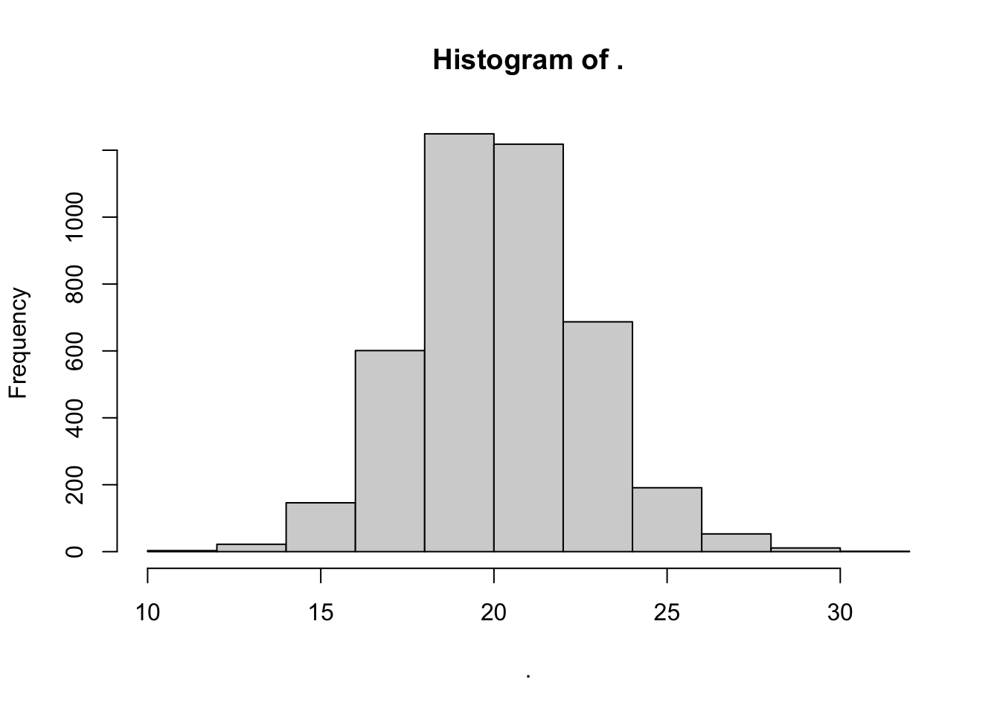
New_Y %>% min()[1] 7.216872New_Y[(New_Y %>% rowMeans()) < 0, ] S1 S3 S5 S7 S9 S2 S4 S6 S8 S10# PCA of Pre-RUVIII normalized abundance values:
prcomp_res <- prcomp(t(Protein_DF_Abundance_imp_2 %>% as.matrix()), center = TRUE, scale. = TRUE)
ggplot2::autoplot(prcomp_res, data = as.data.frame(Meta), colour = "Cond", shape = "Ind", size =4)+
theme_bw()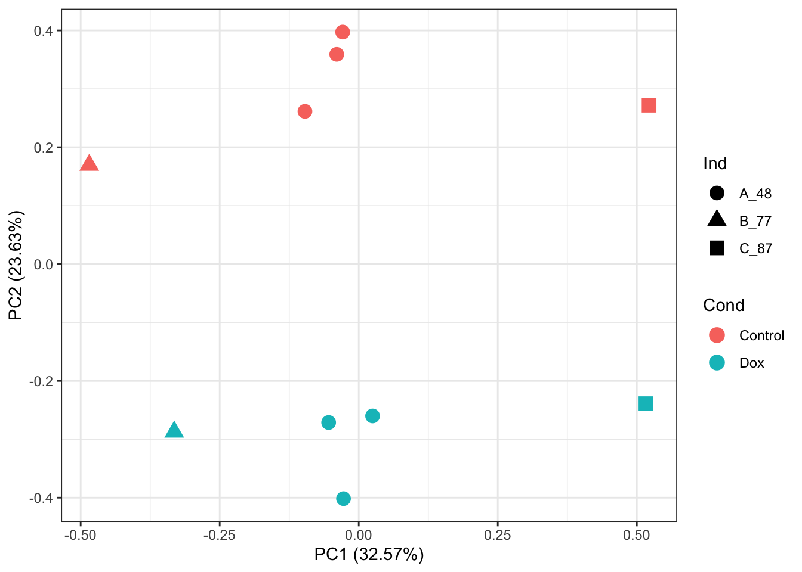
# PCA of Post-RUVIII normalized abundance values:
prcomp_res <- prcomp(t(New_Y), center = TRUE, scale. = TRUE)
ggplot2::autoplot(prcomp_res, data = as.data.frame(Meta), colour = "Cond", shape = "Ind", size =4)+
theme_bw()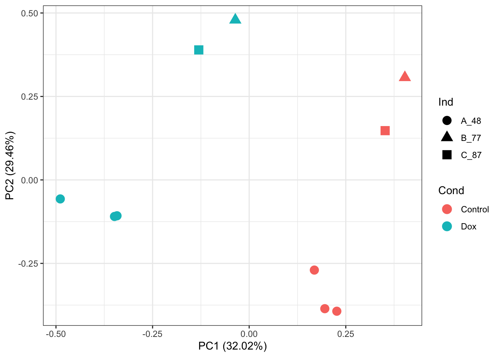
New_Y %>% head() S1 S3 S5 S7 S9 S2 S4
A0A0B4J2A2 18.83632 18.79443 19.28942 19.40656 19.49348 18.97978 19.24259
A0A0B4J2D5 23.96540 24.07276 23.95113 23.81659 23.92396 23.89443 23.74051
A0A494C071 18.14255 18.08070 17.68807 18.21752 18.08793 18.40303 18.40635
A0AVT1 14.29941 14.44480 15.45203 15.11493 15.06703 14.26425 14.52497
A0FGR8 20.26983 20.13941 19.91745 20.01871 19.99166 20.11768 20.13968
A0JLT2 17.90073 17.73392 17.66481 17.33240 17.85925 17.91398 17.89374
S6 S8 S10
A0A0B4J2A2 19.25256 19.16810 19.31979
A0A0B4J2D5 23.73598 23.69334 23.62843
A0A494C071 18.06396 18.35044 17.95179
A0AVT1 15.07628 14.46519 14.63148
A0FGR8 20.07468 20.12751 20.04989
A0JLT2 17.48087 17.13845 17.88291New_Y %>% rowMeans() %>% hist(breaks = 100)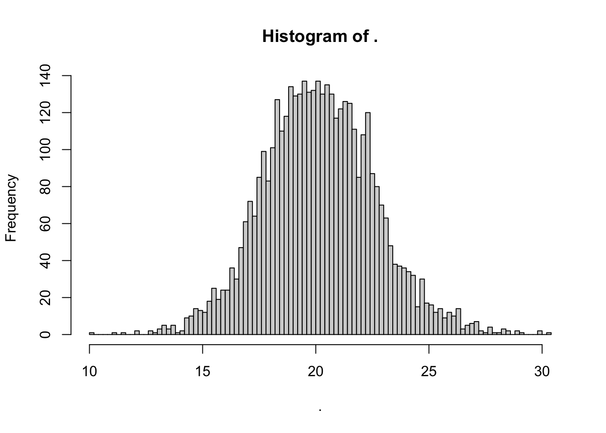
New_Y %>% na.omit() %>% dim()[1] 4182 10New_Y[,1] %>% hist(breaks = 100)
New_Y[,2] %>% hist(breaks = 100)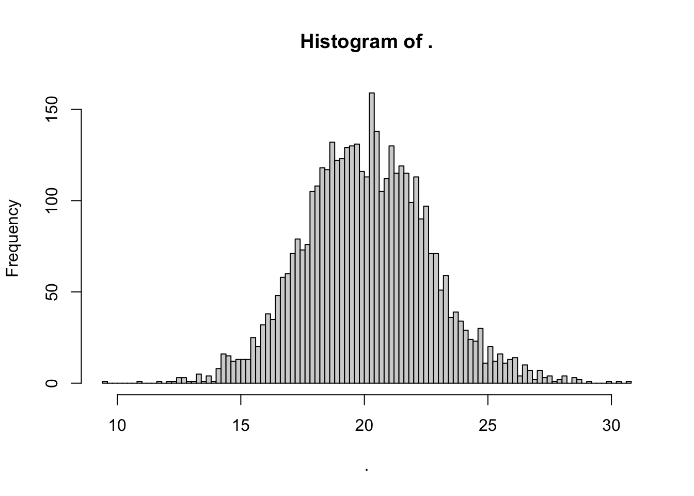
New_Y[,3] %>% hist(breaks = 100)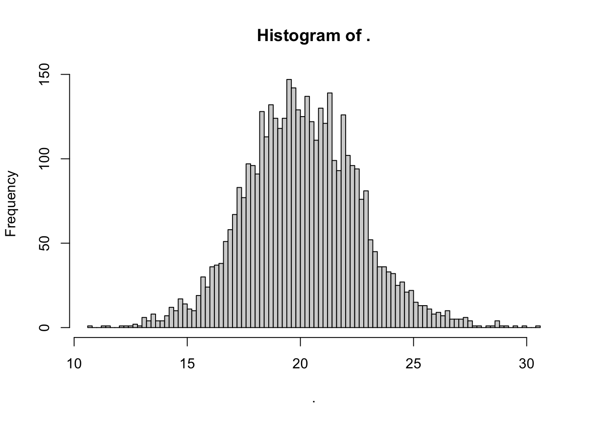
New_Y[,4] %>% hist(breaks = 100)
New_Y[,5] %>% hist(breaks = 100)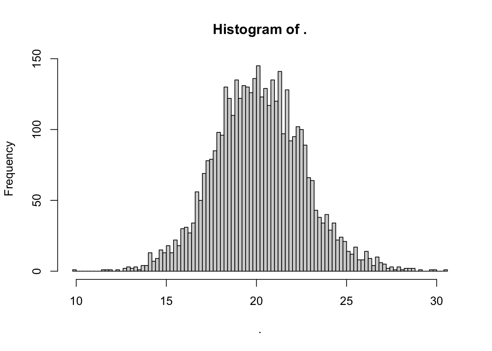
New_Y[,6] %>% hist(breaks = 100)
New_Y[,7] %>% hist(breaks = 100)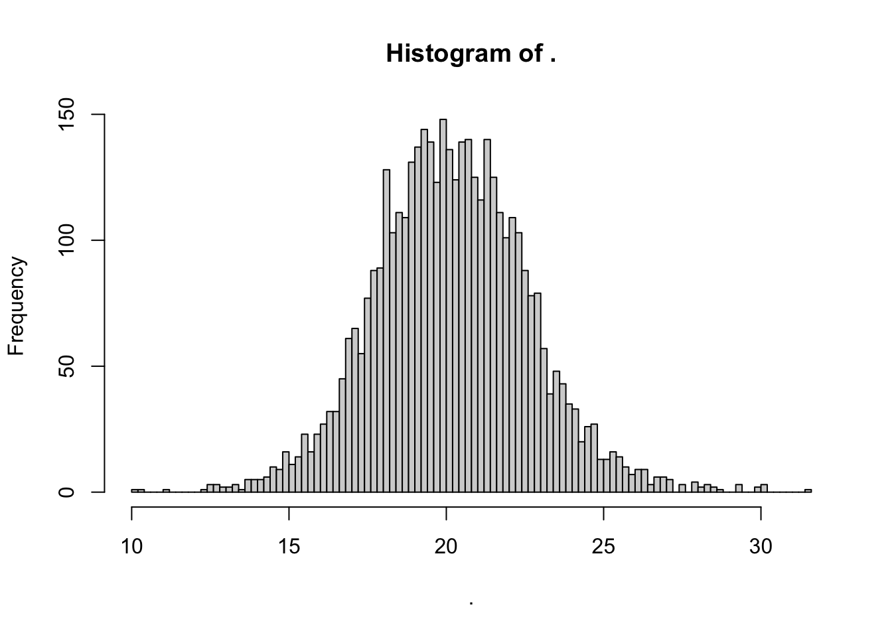
New_Y[,8] %>% hist(breaks = 100)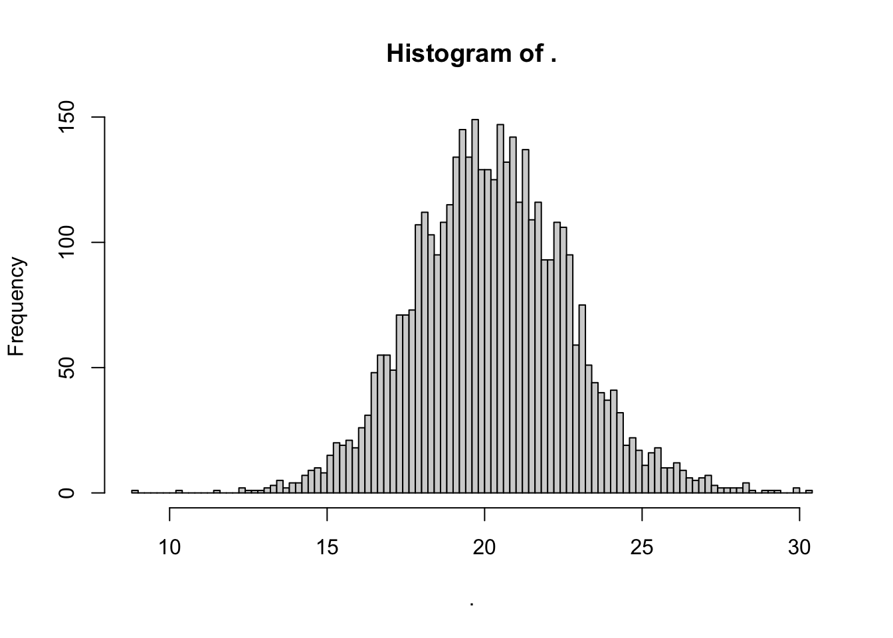
New_Y[,9] %>% hist(breaks = 100)
New_Y[,10] %>% hist(breaks = 100)Meta_sub<-Meta[c(1,2,4,6,7,9),]
counts_RUV_log2_sub <- New_Y[,c(1,2,4,6,7,9)]
counts_RUV_log2_sub %>% head() S1 S3 S7 S2 S4 S8
A0A0B4J2A2 18.83632 18.79443 19.40656 18.97978 19.24259 19.16810
A0A0B4J2D5 23.96540 24.07276 23.81659 23.89443 23.74051 23.69334
A0A494C071 18.14255 18.08070 18.21752 18.40303 18.40635 18.35044
A0AVT1 14.29941 14.44480 15.11493 14.26425 14.52497 14.46519
A0FGR8 20.26983 20.13941 20.01871 20.11768 20.13968 20.12751
A0JLT2 17.90073 17.73392 17.33240 17.91398 17.89374 17.13845counts_RUV_log2_sub %>% dim()[1] 4182 6counts_RUV_log2_sub[,1] %>% hist(breaks = 100)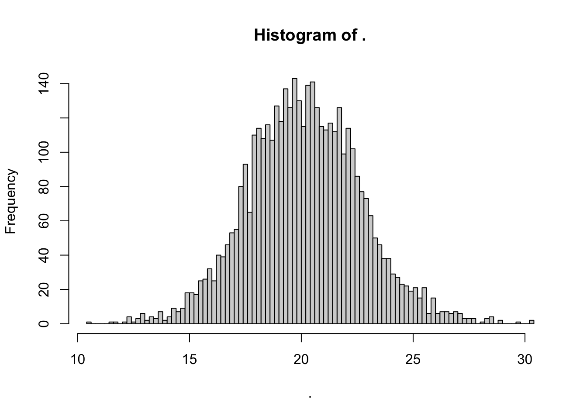
counts_RUV_log2_sub[,2] %>% hist(breaks = 100)
counts_RUV_log2_sub[,3] %>% hist(breaks = 100)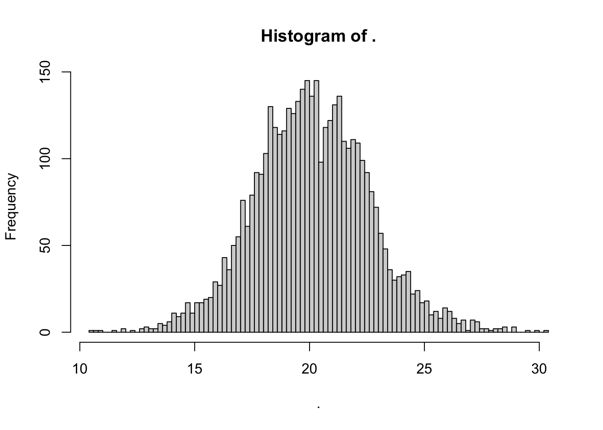
counts_RUV_log2_sub[,4] %>% hist(breaks = 100)
counts_RUV_log2_sub[,5] %>% hist(breaks = 100)
counts_RUV_log2_sub[,6] %>% hist(breaks = 100)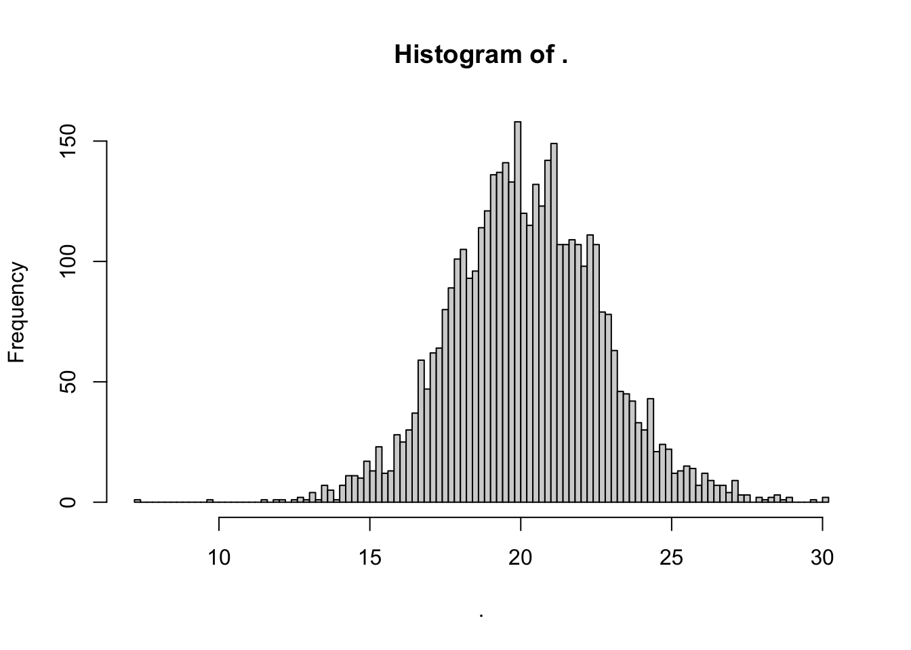
# PCA of RUVIII normalized abundance values:
prcomp_res <- prcomp(t(counts_RUV_log2_sub %>% as.matrix()), center = TRUE, scale. = TRUE)
ggplot2::autoplot(prcomp_res, data = as.data.frame(Meta_sub), colour = "Cond", shape = "Ind", size =4)+
theme_bw()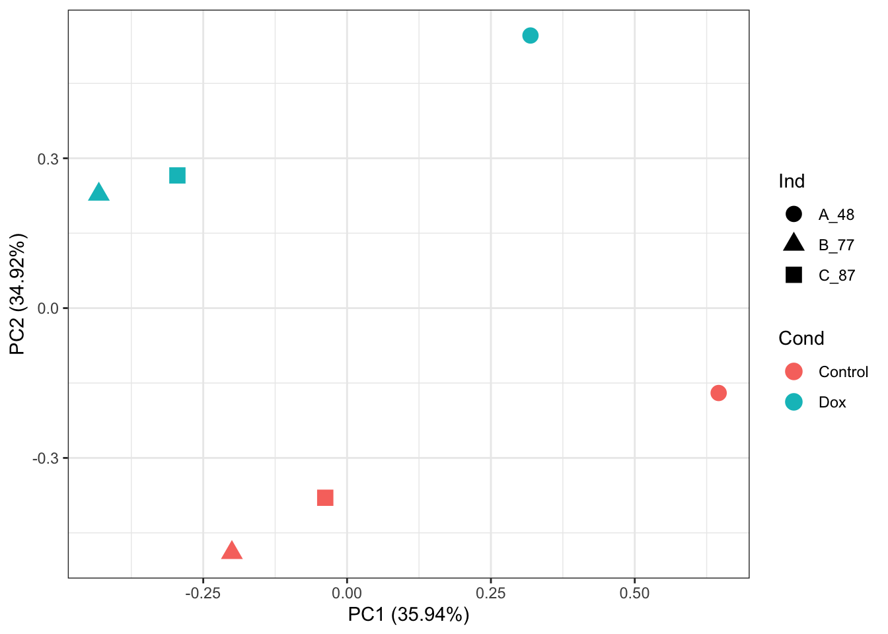
counts_RUV_log2_sub_quantnorm <- limma::normalizeBetweenArrays(counts_RUV_log2_sub, method = "quantile")
counts_RUV_log2_sub_quantnorm %>% head() S1 S3 S7 S2 S4 S8
A0A0B4J2A2 18.86297 18.90679 19.42470 18.98217 19.19023 19.07789
A0A0B4J2D5 23.92284 24.05312 23.80434 23.96008 23.78608 23.61631
A0A494C071 18.18276 18.18276 18.23292 18.39560 18.33624 18.28836
A0AVT1 14.39705 14.50740 15.22635 14.27202 14.39705 14.42666
A0FGR8 20.25839 20.18068 20.05801 20.12714 20.10611 20.06667
A0JLT2 17.92053 17.84082 17.39529 17.88697 17.81814 17.05696counts_RUV_log2_sub_quantnorm %>% dim()[1] 4182 6counts_RUV_log2_sub_quantnorm[,1] %>% hist(breaks = 100)
counts_RUV_log2_sub_quantnorm[,2] %>% hist(breaks = 100)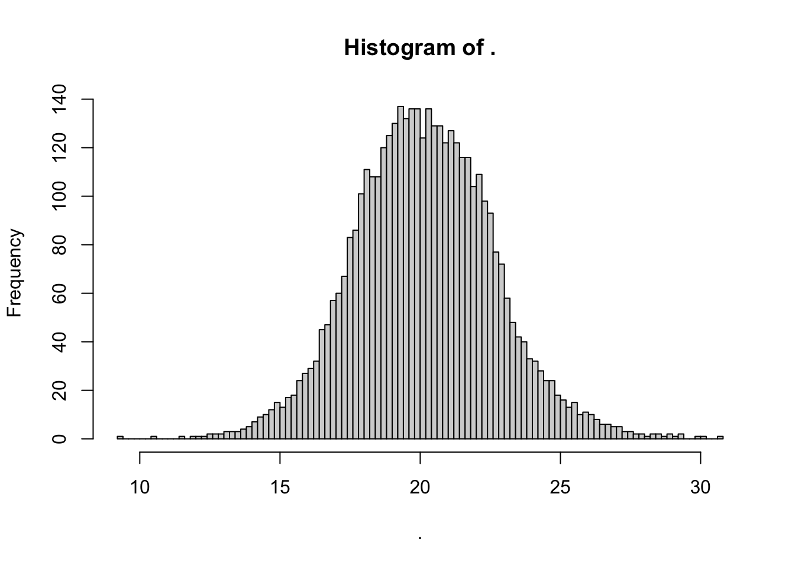
counts_RUV_log2_sub_quantnorm[,3] %>% hist(breaks = 100)
counts_RUV_log2_sub_quantnorm[,4] %>% hist(breaks = 100)
counts_RUV_log2_sub_quantnorm[,5] %>% hist(breaks = 100)
counts_RUV_log2_sub_quantnorm[,6] %>% hist(breaks = 100)
# PCA of RUVIII normalized abundance values:
prcomp_res <- prcomp(t(counts_RUV_log2_sub_quantnorm %>% as.matrix()), center = TRUE, scale. = TRUE)
ggplot2::autoplot(prcomp_res, data = as.data.frame(Meta_sub), colour = "Cond", shape = "Ind", size =4)+
theme_bw()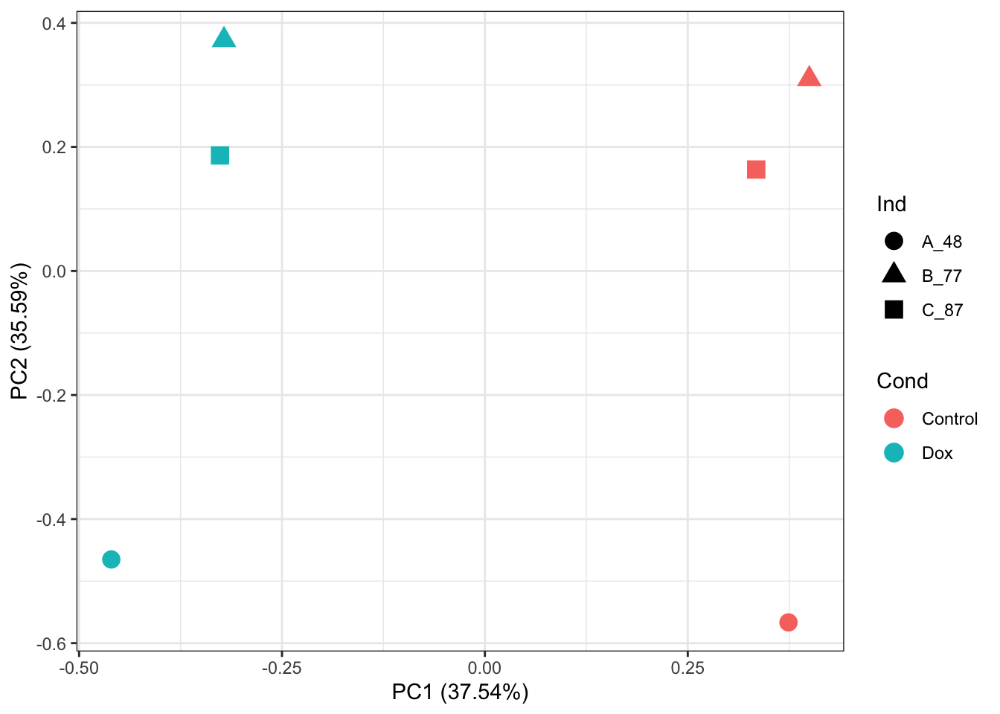
# Create a DataFrame for the phenoData
phenoData_RUVIII <- DataFrame(Meta)
phenoData_RUVIII <- Meta[c(1,2,4,6,7,9), ]
# View changes
phenoData_RUVIII Samples Ind Rep Cond Cond_Ind
S1 S1 B_77 Bio Dox B_77_Dox
S3 S3 C_87 Bio Dox C_87_Dox
S7 S7 A_48 Tech Dox A_48_Dox
S2 S2 B_77 Bio Control B_77_Control
S4 S4 C_87 Bio Control C_87_Control
S8 S8 A_48 Tech Control A_48_Control# Create Design Matrix
# phenoData$Cond <- factor(phenoData$Cond , levels = c("Control", "Dox"))
design <- model.matrix(~ 0 + Cond, data = phenoData_RUVIII)
design CondControl CondDox
S1 0 1
S3 0 1
S7 0 1
S2 1 0
S4 1 0
S8 1 0
attr(,"assign")
[1] 1 1
attr(,"contrasts")
attr(,"contrasts")$Cond
[1] "contr.treatment"# rename columns
colnames(design) <- c('Control', "Dox")
# Get model counts
Model_counts <- counts_RUV_log2_sub_quantnorm
# Fit model
dupcor <- duplicateCorrelation(Model_counts, design = design, block = phenoData_RUVIII$Ind)
fit <- lmFit(object = as.matrix(Model_counts), block = phenoData_RUVIII$Ind, design = design, correlation = dupcor$consensus.correlation)
fit2 <- eBayes(fit)
# Make contrasts
cm <- makeContrasts(
DoxvNorm = Dox - Control,
levels = design)
# Model with contrasts
fit2 <- contrasts.fit(fit, cm)
fit2 <- eBayes(fit2, robust = TRUE, trend = TRUE)
# Summarize
results_summary <- decideTests(fit2, adjust.method = "none", p.value = 0.05)
summary(results_summary) DoxvNorm
Down 546
NotSig 3027
Up 609# Toptable summary organized
toptable_summary_DoxvNorm <- topTable(fit2, coef = "DoxvNorm",number = (nrow(Model_counts)), p.value = 1, adjust.method = "none")
toptable_summary_DoxvNorm$Protein <- rownames(toptable_summary_DoxvNorm)
toptable_summary_DoxvNorm$P.Value %>% hist(breaks = 100)
abline(v = c(0.01,0.025, 0.05, 0.1), col = "red" )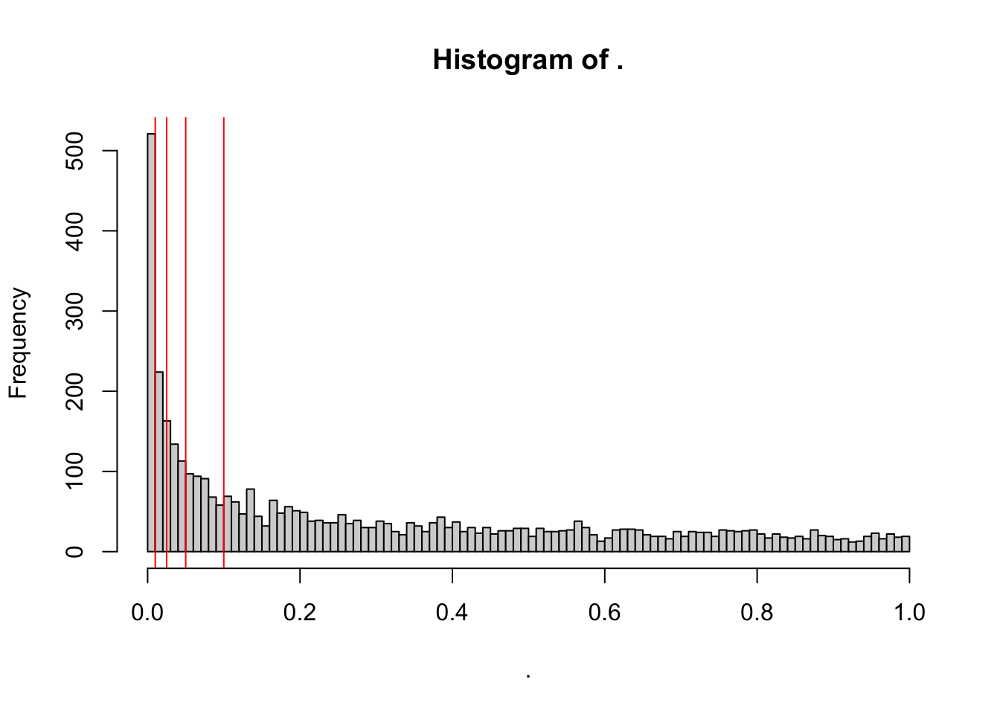
toptable_summary_DoxvNorm %>% head() logFC AveExpr t P.Value adj.P.Val B Protein
Q15061 2.444967 18.06896 22.98679 2.938337e-07 2.938337e-07 6.950800 Q15061
O76021 -2.204465 21.49534 -18.66029 1.173790e-06 1.173790e-06 5.995308 O76021
P43694 -1.842058 18.83998 -15.92359 2.895475e-06 2.895475e-06 5.308015 P43694
P01130 -1.815040 19.22969 -14.90808 4.560250e-06 4.560250e-06 4.929984 P01130
O14763 2.068618 20.70338 13.71850 7.513816e-06 7.513816e-06 4.502320 O14763
Q6EMK4 1.804211 18.96917 13.54255 8.117846e-06 8.117846e-06 4.434546 Q6EMK4# Volcano plots
# 1. Create a column to threshold P-values
toptable_summary_DoxvNorm <- toptable_summary_DoxvNorm %>% mutate(threshold_P = P.Value < 0.05)
# 2. Plot
ggplot(toptable_summary_DoxvNorm)+
geom_point(mapping = aes(x = logFC, y = -log10(P.Value), color = threshold_P))+
xlab("log2FC")+
ylab("-log10 nominal p-value")+
ylim(0, 7)+
xlim(-6, 6)+
theme(legend.position = "none",
plot.title = element_text(size = rel(1.5), hjust = 0.5),
axis.title = element_text(size = rel(1.25)))+
theme_bw()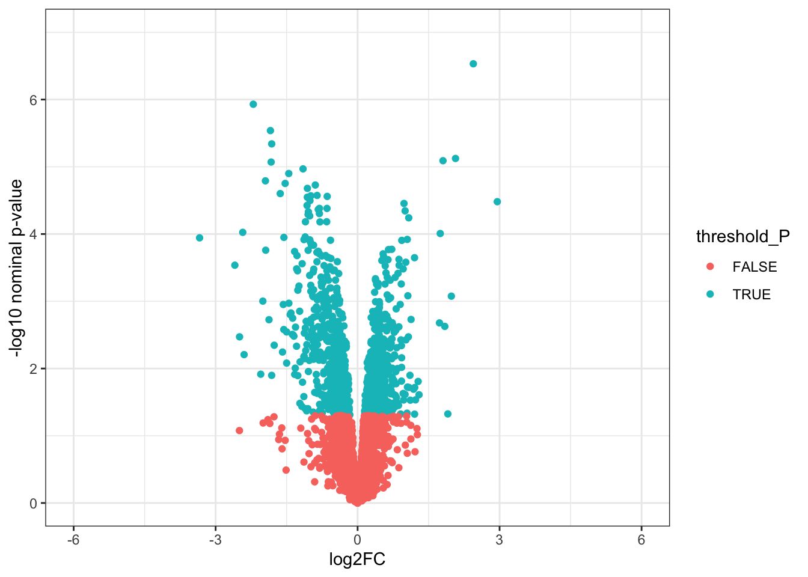
sessionInfo()R version 4.4.1 (2024-06-14)
Platform: x86_64-apple-darwin20
Running under: macOS Sonoma 14.6.1
Matrix products: default
BLAS: /Library/Frameworks/R.framework/Versions/4.4-x86_64/Resources/lib/libRblas.0.dylib
LAPACK: /Library/Frameworks/R.framework/Versions/4.4-x86_64/Resources/lib/libRlapack.dylib; LAPACK version 3.12.0
locale:
[1] en_US.UTF-8/en_US.UTF-8/en_US.UTF-8/C/en_US.UTF-8/en_US.UTF-8
time zone: America/Chicago
tzcode source: internal
attached base packages:
[1] stats4 stats graphics grDevices utils datasets methods
[8] base
other attached packages:
[1] ruv_0.9.7.1 DESeq2_1.44.0
[3] impute_1.78.0 WGCNA_1.72-5
[5] fastcluster_1.2.6 dynamicTreeCut_1.63-1
[7] BioNERO_1.12.0 reshape2_1.4.4
[9] ggridges_0.5.6 biomaRt_2.60.1
[11] UpSetR_1.4.0 DOSE_3.30.4
[13] org.Hs.eg.db_3.19.1 AnnotationDbi_1.66.0
[15] clusterProfiler_4.12.6 pheatmap_1.0.12
[17] qvalue_2.36.0 cluster_2.1.6
[19] ggfortify_0.4.17 lubridate_1.9.3
[21] forcats_1.0.0 stringr_1.5.1
[23] dplyr_1.1.4 purrr_1.0.2
[25] readr_2.1.5 tidyr_1.3.1
[27] tibble_3.2.1 ggplot2_3.5.1
[29] tidyverse_2.0.0 RColorBrewer_1.1-3
[31] RUVSeq_1.38.0 edgeR_4.2.1
[33] limma_3.60.4 EDASeq_2.38.0
[35] ShortRead_1.62.0 GenomicAlignments_1.40.0
[37] SummarizedExperiment_1.34.0 MatrixGenerics_1.16.0
[39] matrixStats_1.4.1 Rsamtools_2.20.0
[41] GenomicRanges_1.56.2 Biostrings_2.72.1
[43] GenomeInfoDb_1.40.1 XVector_0.44.0
[45] IRanges_2.38.1 S4Vectors_0.42.1
[47] BiocParallel_1.38.0 Biobase_2.64.0
[49] BiocGenerics_0.50.0 workflowr_1.7.1
loaded via a namespace (and not attached):
[1] fs_1.6.4 bitops_1.0-8 enrichplot_1.24.2
[4] httr_1.4.7 doParallel_1.0.17 backports_1.5.0
[7] tools_4.4.1 utf8_1.2.4 R6_2.5.1
[10] mgcv_1.9-1 lazyeval_0.2.2 GetoptLong_1.0.5
[13] withr_3.0.1 prettyunits_1.2.0 gridExtra_2.3
[16] preprocessCore_1.66.0 cli_3.6.3 network_1.18.2
[19] scatterpie_0.2.4 labeling_0.4.3 sass_0.4.9
[22] genefilter_1.86.0 yulab.utils_0.1.7 foreign_0.8-87
[25] gson_0.1.0 R.utils_2.12.3 rstudioapi_0.16.0
[28] RSQLite_2.3.7 generics_0.1.3 gridGraphics_0.5-1
[31] shape_1.4.6.1 BiocIO_1.14.0 hwriter_1.3.2.1
[34] GO.db_3.19.1 Matrix_1.7-0 interp_1.1-6
[37] fansi_1.0.6 abind_1.4-8 R.methodsS3_1.8.2
[40] lifecycle_1.0.4 whisker_0.4.1 yaml_2.3.10
[43] SparseArray_1.4.8 BiocFileCache_2.12.0 grid_4.4.1
[46] blob_1.2.4 promises_1.3.0 crayon_1.5.3
[49] pwalign_1.0.0 lattice_0.22-6 cowplot_1.1.3
[52] annotate_1.82.0 GenomicFeatures_1.56.0 KEGGREST_1.44.1
[55] pillar_1.9.0 knitr_1.48 ComplexHeatmap_2.20.0
[58] fgsea_1.30.0 rjson_0.2.22 codetools_0.2-20
[61] fastmatch_1.1-4 glue_1.7.0 getPass_0.2-4
[64] ggfun_0.1.6 data.table_1.16.0 vctrs_0.6.5
[67] png_0.1-8 treeio_1.28.0 gtable_0.3.5
[70] cachem_1.1.0 aroma.light_3.34.0 xfun_0.47
[73] S4Arrays_1.4.1 tidygraph_1.3.1 coda_0.19-4.1
[76] survival_3.7-0 iterators_1.0.14 statmod_1.5.0
[79] nlme_3.1-166 ggtree_3.12.0 bit64_4.0.5
[82] progress_1.2.3 filelock_1.0.3 GENIE3_1.26.0
[85] rprojroot_2.0.4 bslib_0.8.0 rpart_4.1.23
[88] Hmisc_5.1-3 colorspace_2.1-1 DBI_1.2.3
[91] nnet_7.3-19 tidyselect_1.2.1 processx_3.8.4
[94] bit_4.0.5 compiler_4.4.1 curl_5.2.2
[97] git2r_0.35.0 httr2_1.0.4 htmlTable_2.4.3
[100] intergraph_2.0-4 xml2_1.3.6 ggdendro_0.2.0
[103] DelayedArray_0.30.1 shadowtext_0.1.4 rtracklayer_1.64.0
[106] checkmate_2.3.2 scales_1.3.0 callr_3.7.6
[109] rappdirs_0.3.3 digest_0.6.37 rmarkdown_2.28
[112] RhpcBLASctl_0.23-42 base64enc_0.1-3 htmltools_0.5.8.1
[115] pkgconfig_2.0.3 jpeg_0.1-10 highr_0.11
[118] dbplyr_2.5.0 fastmap_1.2.0 htmlwidgets_1.6.4
[121] rlang_1.1.4 GlobalOptions_0.1.2 UCSC.utils_1.0.0
[124] farver_2.1.2 jquerylib_0.1.4 jsonlite_1.8.8
[127] statnet.common_4.9.0 GOSemSim_2.30.2 R.oo_1.26.0
[130] RCurl_1.98-1.16 magrittr_2.0.3 ggnetwork_0.5.13
[133] Formula_1.2-5 GenomeInfoDbData_1.2.12 ggplotify_0.1.2
[136] patchwork_1.2.0 munsell_0.5.1 Rcpp_1.0.13
[139] ape_5.8 viridis_0.6.5 minet_3.62.0
[142] stringi_1.8.4 ggraph_2.2.1 zlibbioc_1.50.0
[145] MASS_7.3-61 plyr_1.8.9 parallel_4.4.1
[148] ggrepel_0.9.6 deldir_2.0-4 graphlayouts_1.1.1
[151] splines_4.4.1 hms_1.1.3 circlize_0.4.16
[154] locfit_1.5-9.10 ps_1.8.0 igraph_2.0.3
[157] XML_3.99-0.17 evaluate_0.24.0 latticeExtra_0.6-30
[160] tzdb_0.4.0 foreach_1.5.2 tweenr_2.0.3
[163] httpuv_1.6.15 polyclip_1.10-7 clue_0.3-65
[166] ggforce_0.4.2 xtable_1.8-4 restfulr_0.0.15
[169] NetRep_1.2.7 tidytree_0.4.6 later_1.3.2
[172] viridisLite_0.4.2 aplot_0.2.3 memoise_2.0.1
[175] sva_3.52.0 timechange_0.3.0